<!doctype html>
<html lang="en">
<head>
  <meta charset="utf-8">
  <meta name="viewport" content="width=device-width, initial-scale=1">
  <title>arxiv digest — 2026-07-08</title>
  <style>
:root {
  --bg: #ffffff;
  --fg: #1f2328;
  --muted: #59636e;
  --border: #d0d7de;
  --card: #f6f8fa;
  --link: #0969da;
}
body {
  max-width: 980px;
  margin: 0 auto;
  padding: 2rem 1rem 5rem;
  font-family: -apple-system, BlinkMacSystemFont, "Segoe UI", Helvetica, Arial, sans-serif;
  line-height: 1.55;
  color: var(--fg);
  background: var(--bg);
}
a { color: var(--link); }
img { max-width: 100%; height: auto; }
pre, code { background: var(--card); border-radius: 6px; }
pre { padding: 1rem; overflow-x: auto; }
blockquote { border-left: 4px solid var(--border); padding-left: 1rem; color: var(--muted); }
details { margin: 0.6rem 0; }
summary { cursor: pointer; font-weight: 600; }
.paper-figures-scroll {
  display: flex;
  gap: 1rem;
  overflow-x: auto;
  overscroll-behavior-x: contain;
  padding: 0.75rem 0.25rem 1rem;
  margin: 1rem 0 1.25rem;
  border-top: 1px solid var(--border);
  border-bottom: 1px solid var(--border);
  scroll-snap-type: x proximity;
}
.paper-figure-card {
  flex: 0 0 min(260px, 72vw);
  scroll-snap-align: start;
  background: var(--card);
  border: 1px solid var(--border);
  border-radius: 12px;
  padding: 0.55rem;
}
.paper-figure-card img {
  display: block;
  width: 100%;
  max-height: 240px;
  object-fit: contain;
  background: white;
  border-radius: 8px;
}
.paper-figure-caption {
  display: block;
  margin-top: 0.5rem;
  color: var(--muted);
  font-size: 0.85rem;
}
.figure-strip-hint {
  color: var(--muted);
  font-size: 0.9rem;
  margin-bottom: -0.3rem;
}
</style>
  <!-- MathJax: renders $...$ inline math and $$...$$ display math, plus
       \(...\) and \[...\]. Loaded from the official CDN; works offline
       once cached. Configured to skip code/pre blocks so arxiv IDs that
       look like dollar amounts don't get mangled. -->
  <script>
    window.MathJax = {
      tex: {
        inlineMath: [['$', '$'], ['\\(', '\\)']],
        displayMath: [['$$', '$$'], ['\\[', '\\]']],
        processEscapes: true,
        processEnvironments: true
      },
      options: {
        skipHtmlTags: ['script', 'noscript', 'style', 'textarea', 'pre', 'code'],
        ignoreHtmlClass: 'tex2jax_ignore',
        processHtmlClass: 'tex2jax_process'
      }
    };
  </script>
  <script id="MathJax-script" async
    src="https://cdn.jsdelivr.net/npm/mathjax@3/es5/tex-chtml.js"></script>
</head>
<body>
<header style="background-color: #333; color: white; padding: 15px; margin-bottom: 20px;">
  <h1 style="margin: 0; font-size: 24px;">
    <a href="https://ochelpan.github.io/arXiv_clean/" style="color: white; text-decoration: none;">Main</a>
  </h1>
</header>

<h1>Daily arXiv Report</h1>

<hr>
<p>
<a href="index.html">← Index</a>
 · <a href="papers_06.html">← Previous</a> · <a href="papers_08.html">Next →</a>
</p>
<hr>

<h2>Papers 121–140</h2>
<p><a id="paper-2607.05000"></a></p>
<h3 id="canonical-quantization-of-neurons"><a href="http://arxiv.org/abs/2607.05000v1">Canonical quantization of neurons</a></h3>
<p><strong>Authors:</strong> Alexander He, Nana Liu, Mark M. Wilde<br>
<strong>Type:</strong> both · <strong>Category:</strong> quantum information and computing · <strong>PDF:</strong> <a href="https://arxiv.org/pdf/2607.05000v1">https://arxiv.org/pdf/2607.05000v1</a><br>
<strong>Analysis basis:</strong> full PDF text, analyzed in chunks
<strong>Topic relevance:</strong> <code>quantum measurements</code> <strong>1/5</strong></p>
<div class="figure-strip-hint">↔ Scroll figures horizontally</div>
<div class="paper-figures-scroll">
<figure class="paper-figure-card">
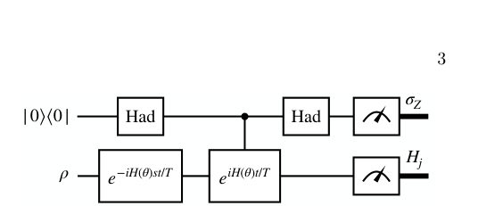
<figcaption class="paper-figure-caption"><b>Fig 1.</b> FIG. 1: Quantum circuit for estimating ∂j Tr[gT (H(θ))ρ].</figcaption>
</figure>
<figure class="paper-figure-card">

<figcaption class="paper-figure-caption"><b>Fig 2.</b> FIG. 3: Training performance for squared-loss minimization using quantized neurons with transverse-field Ising (TFIM) and commuting Ising (IM) Hamiltonians, and hyperbolic tangent activation, for a seven-qubit system.</figcaption>
</figure>
</div>

<p><strong>Summary.</strong> This work establishes canonical quantization as a principled method to build quantum analogues of artificial neurons. By replacing classical energy functions with Hamiltonians and applying activation functions via matrix calculus, they create measurable 'activation observables'. The resulting quantized neural networks show superior expressive power over classical models when trained on quantum data.</p>
<p><strong>Why it may be interesting.</strong> It provides a concrete framework for translating concepts from classical computation (ML) into the language of quantum operators and measurements, which is highly relevant for developing quantum machine learning algorithms that go beyond simple state encoding.</p>
<details>
<summary>Detailed structure</summary>
<p><strong>Main problem.</strong> The paper applies canonical quantization, a physics procedure, to construct quantum models for machine learning primitives like neurons.</p>
<p><strong>Main result.</strong> Quantized neurons exhibit enhanced expressive capabilities compared to their classical counterparts on representative learning tasks.</p>
<p><strong>Method.</strong> Hybrid quantum-classical (HQC) algorithms are developed to train and evaluate these quantized neurons by estimating the expectation value of an activation observable $\varphi(H(	heta))$ on input quantum states.</p>
<p><strong>Model / system.</strong> The model quantizes a classical neuron defined by an energy function and an activation function. The classical energy function is mapped to a quantum Hamiltonian $H_C(	heta)$, and the activation function becomes a matrix functional applied to this Hamiltonian, yielding an 'activation observable' $\varphi(H)$.</p>
<p><strong>Key observables.</strong> The primary observable is the expectation value of the activation observable, $    ext{Tr}[\varphi(H(  heta))
ho]$, used in minimizing the mean squared error loss function.</p>
<p><strong>Important parameters / regimes.</strong> Temperature $T$ (used in hyperbolic tangent activation), and Hamiltonian parameters $  heta$ defining the quantum circuit/Hamiltonian.</p>
<p><strong>Assumptions / limitations.</strong> The initial focus is on qubits with input variables restricted to $\{-1, 1\}$, requiring basic primitives like Hadamard test and Hamiltonian simulation for implementation.</p>
<p><strong>Figures summary.</strong> Figure 3 compares training performance (Squared Loss) between noncommuting ($  ext{HTFIM}$) and commuting ($  ext{HIM}$) Hamiltonian models, showing the former outperforms the latter.</p>
<p><strong>Paper structure.</strong> The paper first introduces quantizing a neuron via canonical quantization. It then develops HQC algorithms for learning observables from quantum data by minimizing a loss function based on measuring the activation observable. Finally, it compares different types of Hamiltonians used in these models.</p>
</details>
<details>
<summary>Abstract</summary>
<p>Canonical quantization provides a systematic procedure for constructing quantum models from classical Hamiltonians. Here, we apply this principle to a fundamental computational primitive of machine learning: the neuron. Specifically, by viewing a neuron as a composition of an energy function and an activation function, we quantize this model by replacing the energy function with a quantum Hamiltonian and applying the activation function to it through matrix functional calculus. This results in an activation observable that can be measured on an input quantum state. We investigate the use of these quantized neurons for function approximation, where the objective is to learn an unknown observable from labeled quantum data. For this purpose, we develop hybrid quantum-classical algorithms for training and evaluation, including procedures for measuring the activation observable and estimating gradients of the squared loss error. Our algorithms for gradient estimation rely on basic primitives like classical random sampling, the Hadamard test, and Hamiltonian simulation, and those for measuring an activation observable rely on quantum algorithms known as the power of one qumode and Schroedingerization. Numerical experiments demonstrate that our quantized neurons exhibit enhanced expressive capabilities relative to corresponding classical neurons on representative learning tasks. Our work establishes canonical quantization as a principled framework for constructing quantum machine learning primitives and provides a foundation for developing neural architectures tailored to quantum data.</p>
</details>
<p><sub><a href="#top">↑ back to top</a></sub></p>

<p><a id="paper-2607.05385"></a></p>
<h3 id="charge-sector-construction-of-the-type-iib-axion-dilaton-wormhole-partition-function"><a href="http://arxiv.org/abs/2607.05385v1">Charge-Sector Construction of the Type-IIB Axion--Dilaton Wormhole Partition Function</a></h3>
<p><strong>Authors:</strong> Soo-Jong Rey<br>
<strong>Type:</strong> theory · <strong>Category:</strong> other · <strong>PDF:</strong> <a href="https://arxiv.org/pdf/2607.05385v1">https://arxiv.org/pdf/2607.05385v1</a><br>
<strong>Analysis basis:</strong> full PDF text, analyzed in chunks
<strong>Topic relevance:</strong> <code>Keldysh / 2PI / non-Gaussian methods</code> <strong>1/5</strong></p>
<div class="figure-strip-hint">↔ Scroll figures horizontally</div>
<div class="paper-figures-scroll">
<figure class="paper-figure-card">

<figcaption class="paper-figure-caption"><b>Fig 1.</b> Figure 1: Three objects in the construction. Panel (a) is a two-ended throat, a connected saddle with two asymptotic non-compact ends. Panel (b) is a neck-cut geometry, obtained by keeping one side of such a solution after an artificial neck boundary has been introduced; it defines a different variational problem. Panel (c) is the two-end operator term obtained when a small throat is replaced by its long-distance source expansion. In panels (a) and (b), the drawn surface lines are geometric guides. In panel (c), the connecting line represents the coefficient matrix Cij ν . In the expression I(A) i Cij ν I(B) j , the superscripts A, B label the parent universes on which the two end...</figcaption>
</figure>
<figure class="paper-figure-card">
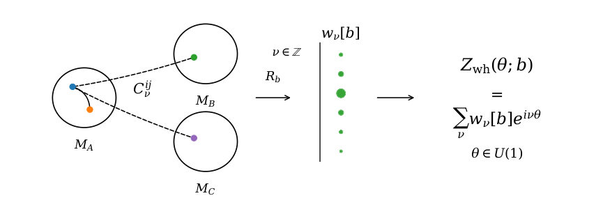
<figcaption class="paper-figure-caption"><b>Fig 2.</b> Figure 2: From the unreduced two-end coefficient to the wormhole partition function. The left part represents the coefficient matrix Cij ν in the space of end-insertion operator labels. The circles denote parent universes, and the points inside them denote end insertions; the parent-universe labels and the end-insertion operator labels are distinct. This is also the algebraic content of panel (c) in Fig. 1: the line represents Cij ν , while the placement labels belong to the end insertions. The reduction data b specify the operation Rb that converts Cij ν into the scalar coefficient Wν[b]. The reduced coefficients are then summed over ν ∈Z with the compact Fourier variable θ to form the...</figcaption>
</figure>
</div>

<p><strong>Summary.</strong> This paper constructs the partition function for a Type-IIB axion--dilaton wormhole using a charge-sector expansion. It analyzes this function by deriving constraints on its coefficients, showing how imposing physical requirements—such as positivity or symmetry—imposes deep mathematical structure on the resulting theta series.</p>
<p><strong>Why it may be interesting.</strong> While highly theoretical, the rigorous development of coefficient constraints based on physical assumptions (like positivity leading to moment functions) mirrors techniques used in quantum field theory and statistical mechanics for ensuring physical consistency.</p>
<details>
<summary>Detailed structure</summary>
<p><strong>Main problem.</strong> The primary goal is constructing the Type-IIB axion--dilaton wormhole partition function, Z_wh(theta; b), by systematically analyzing its dependence on charge-sector data.</p>
<p><strong>Main result.</strong> The paper establishes a hierarchy of mathematical constraints—including discrete symmetry covariance, moment positivity, and Cauchy–Schwarz inequalities—that the coefficients of this theta expansion must satisfy depending on the physical assumptions made.</p>
<p><strong>Method.</strong> The method involves deriving the partition function through a multi-step process: calculating an initial coefficient matrix from semiclassical saddle points in each charge sector, followed by a reduction operation using specific data (b) to yield scalar coefficients W_nu[b].</p>
<p><strong>Model / system.</strong> The model is Type-IIB string theory compactification involving wormhole geometries. The analysis focuses on the resulting partition function expressed as a Fourier series in the variable theta, conjugate to an integer axion charge.</p>
<p><strong>Key observables.</strong> The wormhole partition function Z_wh(theta; b), the reduced scalar coefficients W_nu[b], and the absolute bound Z_abs[b].</p>
<p><strong>Important parameters / regimes.</strong> The compact Fourier variable theta, the integer charge index nu, and the reduction data vector b.</p>
<p><strong>Assumptions / limitations.</strong> Assumptions range from assuming positive reduced coefficients (leading to moment positivity) to assuming the unreduced coefficient matrix forms a positive quadratic form. The final microscopic calculation of the coefficients remains an external task.</p>
<p><strong>Figures summary.</strong> Figure 1 illustrates geometric objects related to the wormhole throat and two-end operators. Figure 2 summarizes the mathematical flow: Saddle Calculation -&gt; Coefficient Matrix C_ij^nu -&gt; Reduction R_b -&gt; Scalar Coefficients W_nu[b] -&gt; Partition Function Z_wh(theta; b).</p>
<p><strong>Paper structure.</strong> The paper follows a logical progression from defining the physical object (wormhole partition function) to deriving its mathematical structure via charge-sector expansion, and finally analyzing this structure by imposing increasingly stringent physical constraints (symmetry, positivity, etc.) on the resulting coefficients.</p>
</details>
<details>
<summary>Abstract</summary>
<p>I construct the Type-IIB axion--dilaton wormhole partition function from charge-sector data. In a chosen axion charge, equivalently form-field flux sector, the long-distance saddle calculation supplies a two-end operator term with coefficient matrix \(C^{ij}_ν\). The labels \(i,j\) label end-insertion operators; the labels \(A,B\) label parent universes. Reduction data \(b\) convert this matrix into scalar coefficients \(W_ν[b]\). The wormhole partition function in the theta variable is \(Z_{\rm wh}(θ;b)=\sum_νW_ν[b]\e^{iνθ}\). I analyze properties and constraints this coefficients satisfy: discrete-symmetry covariance, phase, absolute bounds, moment positivity, Cauchy--Schwarz inequalities for the unreduced coefficient matrix, complex-\(θ\) domains, charge-lattice tails, and the dilute Bessel/Skellam limit. The \(θ\)-dependence of the wormhole partition function is the Fourier transform of the charge-sector scalar coefficients.</p>
</details>
<p><sub><a href="#top">↑ back to top</a></sub></p>

<p><a id="paper-2607.04502"></a></p>
<h3 id="data-driven-prediction-of-nacl-type-entropy-stabilized-oxide-compositions-from-first-principles-and-supervised-learning"><a href="http://arxiv.org/abs/2607.04502v1">Data-Driven Prediction of NaCl-Type Entropy-Stabilized Oxide Compositions from First-Principles and Supervised Learning</a></h3>
<p><strong>Authors:</strong> Sebastien Junier, Celine Barreteau, David Berardan, Yann-Andrev Kerneur, Jean-Claude Crivello<br>
<strong>Type:</strong> theory · <strong>Category:</strong> disordered systems and neural networks · <strong>PDF:</strong> <a href="https://arxiv.org/pdf/2607.04502v1">https://arxiv.org/pdf/2607.04502v1</a><br>
<strong>Analysis basis:</strong> full PDF text, analyzed in chunks
<strong>Topic relevance:</strong> <code>methods for driven-dissipative</code> <strong>1/5</strong></p>
<div class="figure-strip-hint">↔ Scroll figures horizontally</div>
<div class="paper-figures-scroll">
<figure class="paper-figure-card">

<figcaption class="paper-figure-caption"><b>Fig 1.</b> Figure 1: (a) Pair clusters distribution in NaCl structure. All clusters under the red lines</figcaption>
</figure>
<figure class="paper-figure-card">

<figcaption class="paper-figure-caption"><b>Fig 2.</b> Figure 2: Representation of equimolar super-cell generated by SQS for (M1M2)O binary</figcaption>
</figure>
<figure class="paper-figure-card">

<figcaption class="paper-figure-caption"><b>Fig 3.</b> Figure 3: Correlation matrix of descriptors. Correlations below 50% are hidden; values</figcaption>
</figure>
<figure class="paper-figure-card">

<figcaption class="paper-figure-caption"><b>Fig 4.</b> Figure 4: Predicted vs. DFT-calculated ∆hullH for the 416 quinary NaCl SQS mixtures.</figcaption>
</figure>
<figure class="paper-figure-card">

<figcaption class="paper-figure-caption"><b>Fig 5.</b> Figure 5: Relative importance of descriptors in the MLP model (mean ± standard devia-</figcaption>
</figure>
</div>

<p><strong>Summary.</strong> This work presents a computational framework that merges Density Functional Theory, Special Quasirandom Structures, and supervised Machine Learning to screen for stable Entropy-Stabilized Oxides. By training ML models on DFT data from thousands of potential compositions, the authors efficiently predict phase stability and guide experimentalists toward novel materials candidates.</p>
<p><strong>Why it may be interesting.</strong> While focused on materials science, the core methodology—combining high-fidelity quantum simulations (DFT) with machine learning to predict complex many-body properties in disordered systems—is highly relevant to modeling strongly correlated or disordered quantum materials.</p>
<details>
<summary>Detailed structure</summary>
<p><strong>Main problem.</strong> The primary challenge is identifying stable Entropy-Stabilized Oxide (ESO) compositions within vast, complex multicomponent spaces by accurately assessing their thermodynamic stability against competing phases.</p>
<p><strong>Main result.</strong> The developed data-driven framework successfully screens thousands of potential quinary ESOs, providing a computationally efficient route to guide experimental synthesis efforts.</p>
<p><strong>Method.</strong> A high-throughput workflow combines first-principles DFT calculations (using SQS supercells) with supervised machine learning models (like MLP and Random Forest) trained to predict stability metrics.</p>
<p><strong>Model / system.</strong> The system under study is the $ ext{NaCl}$-type structure of quinary Entropy-Stabilized Oxides, $(\{M_i\})O$, involving up to 16 different cation species. Stability is assessed by calculating the formation enthalpy relative to the convex hull.</p>
<p><strong>Key observables.</strong> Formation enthalpy deviation from the convex hull ($\Delta_{	ext{hull}}H$) and the stabilization temperature ($T_{	ext{stab}}$).</p>
<p><strong>Important parameters / regimes.</strong> The test error for the optimized ML model was reported as $\approx 4 	ext{ kJ}\cdot	ext{mol}^{-1}$. The calculations cover up to quinary mixtures.</p>
<p><strong>Assumptions / limitations.</strong> Absolute stabilization temperatures are affected by systematic thermodynamic approximations, and magnetic ordering in the database was not fully optimized due to computational cost.</p>
<p><strong>Figures summary.</strong> Figures illustrate the performance of ML models (prediction vs. actual $\Delta_{	ext{hull}}H$) and show convergence tests for SQS supercell sizes and k-point meshes.</p>
<p><strong>Paper structure.</strong> The paper first establishes the physical problem, details the combined DFT/SQS/ML methodology, presents results on screening thousands of compositions, and concludes by establishing an efficient data-driven search protocol for ESOs.</p>
</details>
<details>
<summary>Abstract</summary>
<p>Entropy-stabilized oxides (ESOs) open access to vast multicomponent compositional spaces, but identifying promising candidates remains challenging because of the large number of possible mixtures and the need to assess their stability against competing phases. In this work, we develop a high-throughput computational framework to screen equimolar quinary ESOs in the NaCl structure type by combining density functional theory (DFT), special quasirandom structures (SQS), convex-hull thermodynamics, and supervised machine learning. A consistent reference database of binary and ternary ordered oxides, including disordered phases such as all binary cation combinations in the NaCl-type oxide, is first constructed using GGA and meta-GGA calculations. Quinary disordered phases are then described by SQS supercells and used to train machine-learning models that predict the distance to the convex hull and the corresponding stabilization temperature over the full set of 4368 possible equimolar quinary compositions generated from 16 cation species. Among the tested models, an optimized multilayer perceptron provides the best predictive performance, with a test error of about 4 kJ/mol, while requiring explicit DFT calculations for only about 10% of the quinary systems. Comparison with experimental synthesis tests and computed decomposition paths further shows that the approach captures the main stability trends and the dominant competing phases, although absolute stabilization temperatures remain affected by systematic thermodynamic approximations. These results establish an efficient route for the data-driven exploration of multicomponent oxides and provide practical guidance for the experimental search for new ESOs.</p>
</details>
<p><sub><a href="#top">↑ back to top</a></sub></p>

<p><a id="paper-2607.05020"></a></p>
<h3 id="emergent-cosmology-and-gravity-from-quantum-time"><a href="http://arxiv.org/abs/2607.05020v1">Emergent cosmology and gravity from quantum time?</a></h3>
<p><strong>Authors:</strong> Ovidiu Cristinel Stoica<br>
<strong>Type:</strong> theory · <strong>Category:</strong> other · <strong>PDF:</strong> <a href="https://arxiv.org/pdf/2607.05020v1">https://arxiv.org/pdf/2607.05020v1</a><br>
<strong>Analysis basis:</strong> full PDF text, analyzed in chunks
<strong>Topic relevance:</strong> <code>non-equilibrium dynamics</code> <strong>1/5</strong></p>
<div class="figure-strip-hint">↔ Scroll figures horizontally</div>
<div class="paper-figures-scroll">
<figure class="paper-figure-card">
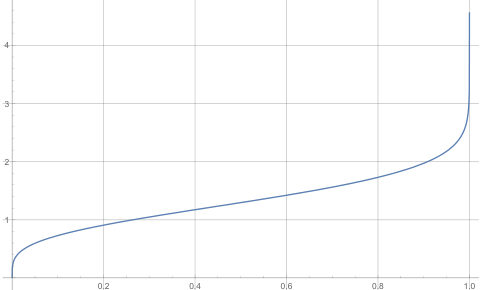
<figcaption class="paper-figure-caption"><b>Fig 1.</b> FIG. 1. Plot of r(τ) for the harmonic oscillator potential, with τ expressed in T-units. The solution has a “Big Rip” singularity at τ →T.</figcaption>
</figure>
<figure class="paper-figure-card">
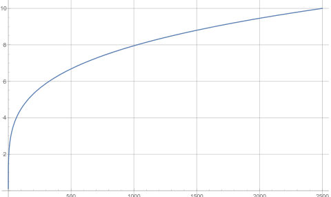
<figcaption class="paper-figure-caption"><b>Fig 2.</b> FIG. 2. Plot of r(τ) for the free potential.</figcaption>
</figure>
<figure class="paper-figure-card">
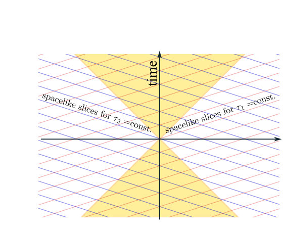
<figcaption class="paper-figure-caption"><b>Fig 3.</b> FIG. 3. System of timelike coordinates (τ1, τ2) on a two- dimensional Minkowski spacetime. The red (blue) parallel lines represent equal-τ1 (equal-τ2) space slices.</figcaption>
</figure>
</div>

<p><strong>Summary.</strong> This paper explores whether General Relativity can emerge purely from quantum mechanics by treating time as an intrinsic observable derived from a stationary wavefunction's amplitude. By enforcing uniformity on this probability density, the authors successfully derive the FLRW cosmological model without needing to input gravitational dynamics initially. This suggests that spacetime curvature itself might be an emergent feature of fundamental quantum time structures.</p>
<p><strong>Why it may be interesting.</strong> While focused on cosmology, the core technique—deriving macroscopic dynamics (like curvature) from the structure of quantum wavefunctions using emergent time parameters—is highly relevant to open quantum systems theory where time evolution is often non-trivial or observer-dependent.</p>
<details>
<summary>Detailed structure</summary>
<p><strong>Main problem.</strong> The central problem is determining if General Relativity (or modifications thereof) can emerge from fundamental quantum principles by interpreting time as an intrinsic observable rather than a background parameter.</p>
<p><strong>Main result.</strong> By defining an intrinsic time $\tau$ based on the stationary wavefunction's amplitude, the dynamics naturally reproduce the Friedmann-Lemaître-Robertson-Walker (FLRW) cosmological model without initially presupposing gravity.</p>
<p><strong>Method.</strong> The methodology involves interpreting the squared amplitude of a stationary quantum state as a probability density for intrinsic time and deriving an effective Schrödinger equation with respect to this emergent time coordinate.</p>
<p><strong>Model / system.</strong> The analysis uses quantum cosmology, starting from stationary solutions in four-dimensional Euclidean space. The system is modeled using a radial eigenvalue equation derived from the full Schrödinger equation, which is then reduced to a 1D form for mathematical tractability.</p>
<p><strong>Key observables.</strong> Curvature emerging in the time direction ($\tau$), the FLRW metric components ($g_{00}, g_{ij}$), and the probability density $P(\tau) \propto |\Psi(\tau)|^2$.</p>
<p><strong>Important parameters / regimes.</strong> The intrinsic time coordinate $\tau$, the effective potential $V_{\text{eff}}(r)$, and cosmological parameters like $\Omega_{m0}, \Omega_{r0}, \Omega_{\Lambda 0}$.</p>
<p><strong>Assumptions / limitations.</strong> Key assumptions include interpreting the squared amplitude as a probability density for intrinsic time, assuming uniformization of this probability density ($\frac{dP}{d\tau} = \text{const}$), and analyzing spherically symmetric solutions.</p>
<p><strong>Paper structure.</strong> The paper progresses by first establishing the mathematical framework using stationary states in Euclidean space, then deriving an effective time evolution equation via intrinsic observables, and finally demonstrating how this leads to a standard FLRW metric consistent with observed cosmology.</p>
</details>
<details>
<summary>Abstract</summary>
<p>Macroscopic observables allow the recovery of intrinsic dynamics from stationary quantum states. I show that, by interpreting the squared amplitude as the probability density for each definite value of intrinsic time, a curvature emerges in the time direction. For example, from the perspective of intrinsic quantum time, the Friedmann-Lemaître-Robertson-Walker cosmological model emerges from spherically symmetric stationary solutions in four-dimensional Euclidean space, without presupposing gravity. If there is no unique direction of time, curvature emerges in all spacetime dimensions, without presupposing gravity, from the variable amplitude of the stationary wavefunction alone. This opens a new possibility that general relativity or some modification of it emerges from intrinsic time observables.</p>
</details>
<p><sub><a href="#top">↑ back to top</a></sub></p>

<p><a id="paper-2607.03749"></a></p>
<h3 id="holographic-heat-engines-for-schwarzschild-black-holes"><a href="http://arxiv.org/abs/2607.03749v1">Holographic heat engines for Schwarzschild black holes</a></h3>
<p><strong>Authors:</strong> Ripunjay Dwivedi, Manus R. Visser<br>
<strong>Type:</strong> theory · <strong>Category:</strong> statistical mechanics · <strong>PDF:</strong> <a href="https://arxiv.org/pdf/2607.03749v1">https://arxiv.org/pdf/2607.03749v1</a><br>
<strong>Analysis basis:</strong> full PDF text, analyzed in chunks
<strong>Topic relevance:</strong> <code>non-equilibrium dynamics</code> <strong>1/5</strong></p>
<div class="figure-strip-hint">↔ Scroll figures horizontally</div>
<div class="paper-figures-scroll">
<figure class="paper-figure-card">

<figcaption class="paper-figure-caption"><b>Fig 1.</b> Figure 1. Efficiency vs. maximum cavity volume. The effi- ciency is shown for the Otto (blue), Diesel (green), and Stirling cycles, with regeneration (red) and without regeneration (or- ange), as a function of Vmax, at fixed Vmin = 300. The dashed black line is the Carnot bound ηCarnot = 1 −Tc/Th = 1/2. For the Otto cycle V2 = Vmin, V1 = Vmax, with S1 = 20 and S3 = 40. For the Diesel cycle V1 = Vmax, with S1 = 20, S3 = 40, and isobaric pressure P2 = 1.5 × 10−3; the in- termediate volumes are then fixed by the equation of state, V2 = V (S1, P2) ≃186 and V3 = V (S3, P2) ≃323, so the cycle exists only for Vmax &gt; V3, where the Diesel curve be- gins. For the Stirling cycles V1 = Vmin and V2 =...</figcaption>
</figure>
<figure class="paper-figure-card">

<figcaption class="paper-figure-caption"><b>Fig 2.</b> Figure 2. Efficiency vs. minimum cavity volume. The ef- ficiency is shown for the Otto (blue), Diesel (green), and Stirling cycles, with regeneration (red) and without regenera- tion (orange), as a function of Vmin at fixed Vmax = 1200 and S1 = 20, S3 = 40, P2 = 1.5 × 10−3, Tc = 0.045, and Th = 0.09. The Diesel efficiency depends only on (S1, S3, P2, Vmax) and is therefore independent of Vmin, appearing as a horizontal line. The Otto efficiency falls monotonically as Vmin →Vmax (compression ratio →1), while the regenerated Stirling effi- ciency stays pinned near the Carnot bound (dashed). The Stirling curves terminate at Vmin ≃265, set by the bound rBTc &gt; √</figcaption>
</figure>
<figure class="paper-figure-card">
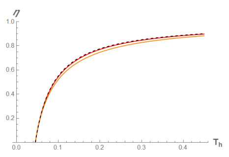
<figcaption class="paper-figure-caption"><b>Fig 3.</b> Figure 3. Efficiency vs. hot reservoir temperature. The two Stirling cycles, with regeneration (red) and without regener- ation (orange), are shown as a function of the hot reservoir temperature Th, at fixed cold reservoir temperature Tc = 0.045, with V1 = Vmin = 300 and V2 = Vmax = 1200. The dashed black curve is the Carnot bound. Both efficiencies vanish at the left endpoint Th = Tc, where the reservoirs coincide and no net work is produced, and approach the Carnot bound from below as Th increases, the regenerated cycle tracking it closely.</figcaption>
</figure>
<figure class="paper-figure-card">
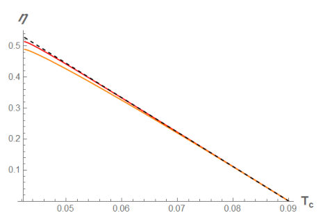
<figcaption class="paper-figure-caption"><b>Fig 4.</b> Figure 4. Efficiency vs. cold reservoir temperature. The two Stirling cycles, with regeneration (red) and without regener- ation (orange), are shown as a function of the cold reservoir temperature Tc, at fixed hot reservoir temperature Th = 0.09, with V1 = Vmin = 300 and V2 = Vmax = 1200. The dashed black curve is the Carnot bound. Both efficiencies vanish at the right endpoint Tc = Th. The range is limited on the left by the bound Tc &gt; T min c = √</figcaption>
</figure>
<figure class="paper-figure-card">
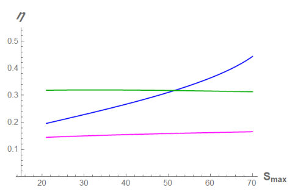
<figcaption class="paper-figure-caption"><b>Fig 5.</b> Figure 5. Efficiency vs. maximum entropy. The efficiency is shown for the Otto (blue), Diesel (green), and Brayton (magenta) cycles as a function of Smax = S3, at fixed Smin = S1 = 20. For the Otto cycle, V2 = 300 and V1 = 1200. For the Diesel cycle, V1 = 1200 and P2 = 1.5 × 10−3. For the Brayton cycle, P1 = 6 × 10−4 and P2 = 1.5 × 10−3. The Otto efficiency rises steeply with Smax and overtakes the nearly flat Diesel curve, while the Brayton efficiency remains the lowest of the three throughout.</figcaption>
</figure>
</div>

<p><strong>Summary.</strong> This paper develops a framework to analyze reversible heat engines powered by black holes confined within a cavity using quasi-local gravity. By mapping the black hole's thermodynamics onto standard P-V and T-S diagrams, the authors derive efficiencies for various cycles. The key finding is that the regenerated Stirling efficiency approaches the Carnot limit at high temperatures, providing insights into the fundamental thermodynamic constraints imposed by gravitational systems.</p>
<p><strong>Why it may be interesting.</strong> While focused on general relativity, the rigorous application of classical thermodynamic cycles (Carnot, Stirling) to a gravitational system provides a powerful analogy for understanding energy conversion limits in complex physical systems, which has parallels in open quantum systems thermodynamics.</p>
<details>
<summary>Detailed structure</summary>
<p><strong>Main problem.</strong> The study constructs reversible black hole heat engines operating within a finite cavity using quasi-local gravitational thermodynamics.</p>
<p><strong>Main result.</strong> Exact efficiencies for standard heat engines (Carnot, Otto, etc.) are derived, showing that the regenerated Stirling efficiency approaches the Carnot bound in the high-temperature limit for the large branch.</p>
<p><strong>Method.</strong> The analysis employs the quasi-local formalism to define thermodynamic potentials (E, S, P, V) on a boundary enclosing a Schwarzschild black hole. Standard thermodynamic cycles are then mapped onto these gravitational variables to calculate efficiencies.</p>
<p><strong>Model / system.</strong> The system models a four-dimensional Schwarzschild black hole enclosed in a spherical cavity ($r_B$). The working substance is dual to the thermal system on this cavity boundary, allowing for the application of classical thermodynamics concepts (P-V, T-S diagrams).</p>
<p><strong>Key observables.</strong> Engine efficiencies ($\eta$), heat transfers ($\delta Q$, $\delta W$), and thermodynamic potentials derived from quasi-local gravity.</p>
<p><strong>Important parameters / regimes.</strong> The analysis is restricted to the large black hole branch for stability; high-temperature limits ($T_h 	o \infty$) are crucial for comparing with Carnot bounds.</p>
<p><strong>Assumptions / limitations.</strong> The construction assumes asymptotically flat spacetime and relies on a quasi-local description of gravity, requiring specific boundary conditions (e.g., 'flat-space background subtraction').</p>
<p><strong>Figures summary.</strong> Figures illustrate constant-property paths (P-V and T-S) for both the large and small black hole branches, detailing how different strokes traverse the thermodynamic space.</p>
<p><strong>Paper structure.</strong> The paper systematically derives fundamental thermodynamic relations using quasi-local gravity, then applies these relations to calculate efficiencies for various standard heat engine cycles. The focus culminates in a detailed comparison of the regenerated Stirling cycle efficiency against the Carnot limit in the high-temperature regime.</p>
</details>
<details>
<summary>Abstract</summary>
<p>We construct reversible black hole heat engines in asymptotically flat spacetime using quasi-local gravitational thermodynamics. We enclose a Schwarzschild black hole in a finite spherical cavity and identify the working substance with the dual thermal system on the cavity boundary. The surface pressure and boundary area define a thermodynamic pressure-volume pair in the dual system, while all coupling constants of the gravitational theory remain fixed. We derive exact efficiencies for the Carnot, Otto, Diesel, Brayton, and Stirling engines and compare them numerically. These efficiencies probe the quasi-local equations of state of the black hole. The regenerated Stirling efficiency remains remarkably close to the Carnot bound and approaches it in the high-temperature limit.</p>
</details>
<p><sub><a href="#top">↑ back to top</a></sub></p>

<p><a id="paper-2607.04095"></a></p>
<h3 id="ml-and-ai-for-density-functional-theory-different-priorities-for-kohn-sham-and-orbital-free-dft-for-electronic-and-nuclear-dft"><a href="http://arxiv.org/abs/2607.04095v1">ML and AI for density functional theory: different priorities for Kohn-Sham and orbital-free DFT, for electronic and nuclear DFT</a></h3>
<p><strong>Authors:</strong> Xin-Hui Wu, Sergei Manzhos<br>
<strong>Type:</strong> theory · <strong>Category:</strong> numerical methods · <strong>PDF:</strong> <a href="https://arxiv.org/pdf/2607.04095v1">https://arxiv.org/pdf/2607.04095v1</a><br>
<strong>Analysis basis:</strong> full PDF text, analyzed in chunks
<strong>Topic relevance:</strong> <code>methods for driven-dissipative</code> <strong>1/5</strong></p>
<div class="figure-strip-hint">↔ Scroll figures horizontally</div>
<div class="paper-figures-scroll">
<figure class="paper-figure-card">

<figcaption class="paper-figure-caption"><b>Fig 1.</b> Figure 1. A visual summary of main similarities and differences between electronic and nuclear DFT in Kohn-Sham and orbital-free paradigms as well as of opportunities for ML/AI methods to improve them.</figcaption>
</figure>
<figure class="paper-figure-card">

<figcaption class="paper-figure-caption"><b>Fig 2.</b> Figure 2. Potential energy curves of 16O nucleus computed with KS DFT and with OF DFT using an ML functional in Ref. 142, as a function of the quadrupole deformation parameter 2. Results from Thomas–Fermi and extended Thomas–Fermi (up to the 4th</figcaption>
</figure>
<figure class="paper-figure-card">

<figcaption class="paper-figure-caption"><b>Fig 3.</b> Figure 3. Computational time tests of DFT with PBE0 and DM21 functionals and CCSD(T). The horizontal axis shows the computation time for a single SCF cycle for two-atom molecules made of elements from H to Ca (neutral form and cations) using the cc-pVTZ basis set and an energy tolerance of 10−9 a.u. using the CCSD(T), while the vertical axis shows the DFT computation time of these systems with DM21 and PBE0 functionals.</figcaption>
</figure>
<figure class="paper-figure-card">
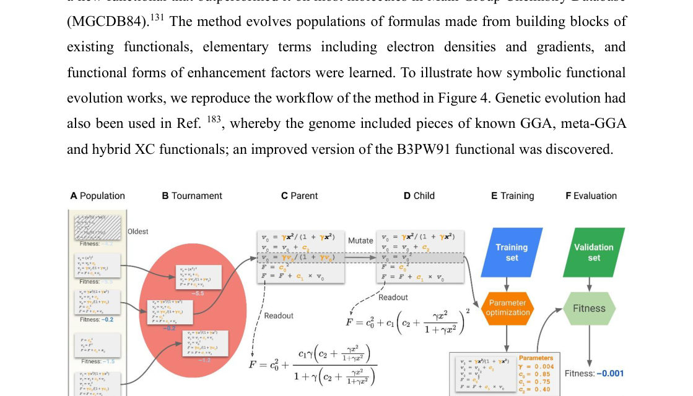
<figcaption class="paper-figure-caption"><b>Fig 4.</b> Figure 4. Workflow of the symbolic functional evolution method use to discover XC functionals in Ref. 93. (A) A population of symbolic density functionals is iteratively evolved using an evolution algorithm. Each individual in the population represents the enhancement factors in a density functional. The performance of a density functional is characterized by its fitness, defined as the negative of validation energy error. (B) In each iteration, a tournament selection is performed on a subset of individuals sampled from the population. (C) The highest-fitness individual in the tournament is selected to be the parent. (D) Then, a child functional is generated by randomly picking one of the...</figcaption>
</figure>
<figure class="paper-figure-card">

<figcaption class="paper-figure-caption"><b>Fig 5.</b> Figure 5. Example of a basis function optimized in BigDFT192 to minimum energy, starting from a p-type Si-centered function, for a hydrogen-terminated Si nanoparticle.</figcaption>
</figure>
</div>

<p><strong>Summary.</strong> This paper provides a comprehensive overview of applying Machine Learning and AI techniques to advance Density Functional Theory (DFT) for both electronic and nuclear structure calculations. It distinguishes between methodological needs when improving the exchange-correlation functional versus approximating kinetic energy functionals in orbital-free approaches. The work highlights that while deep learning is powerful, symbolic regression offers conceptually advantageous paths forward for achieving greater accuracy and efficiency.</p>
<p><strong>Why it may be interesting.</strong> While focused on condensed matter/nuclear theory, the deep dive into using symbolic regression and neural networks to approximate fundamental energy functionals is highly relevant for developing general-purpose, scalable numerical solvers applicable across quantum physics domains.</p>
<details>
<summary>Detailed structure</summary>
<p><strong>Main problem.</strong> The paper addresses computational bottlenecks and accuracy limitations inherent in Density Functional Theory (DFT) when applied to both electronic and nuclear systems.</p>
<p><strong>Main result.</strong> It outlines that different ML/AI techniques are suitable for improving DFT by targeting specific components like the exchange-correlation functional, kinetic energy functional, or density itself.</p>
<p><strong>Method.</strong> The authors survey various ML/AI approaches—including deep neural networks and symbolic regression—to enhance established quantum mechanical frameworks like Kohn-Sham (KS) and Orbital-Free DFT (OF-DFT).</p>
<p><strong>Model / system.</strong> The scope covers electronic systems (atoms, molecules) governed by the Schrödinger equation under the Born-Oppenheimer approximation, and nuclear systems involving nucleons interacting via the strong force. The core mathematical tool is the energy functional $E[
ho(\mathbf{r})]$.</p>
<p><strong>Key observables.</strong> Electronic observables include energies, band structures, and effective potentials; nuclear observables include binding energies, radii, and equation of state.</p>
<p><strong>Important parameters / regimes.</strong> Computational scaling (e.g., cubic scaling in KS DFT), the unknown exact form of the exchange-correlation functional ($V_{XC}$), and system size are critical parameters.</p>
<p><strong>Assumptions / limitations.</strong> The primary assumption is that ML/AI can provide accurate, computationally cheaper approximations to intractable components of the DFT energy functional or Hamiltonian.</p>
<p><strong>Paper structure.</strong> The paper proceeds by first reviewing the foundational physics and computational challenges in electronic vs. nuclear DFT, then systematically detailing how ML techniques can be applied to overcome specific bottlenecks (e.g., learning KEFs vs. XC functionals), concluding with a comparison of promising algorithmic choices.</p>
</details>
<details>
<summary>Abstract</summary>
<p>We overview similarities and, importantly, differences in computational bottlenecks and accuracy requirements that can be addressed with machine learning (ML) and artificial intelligence (AI) techniques in electronic and nuclear DFT. From these follow different promising methodological and algorithmic choices depending on whether one machine learns the exchange correlation (XC) functional, the kinetic energy functional (KEF), the density or the basis functions. In particular, while the popular deep neural networks remain a potent choice in the context of KS DFT, we highlight their disadvantages when building KEFs and highlight conceptual advantages - yet to be fully realized - of symbolic regression for both electronic and nuclear DFT. We point out promising approaches that can be carried from the more extensively investigated ML-enhanced electronic DFT to nuclear DFT.</p>
</details>
<p><sub><a href="#top">↑ back to top</a></sub></p>

<p><a id="paper-2607.04462"></a></p>
<h3 id="noise-aware-synthesis-of-quantum-ldpc-encoder-circuits-via-two-sided-hamming-descent"><a href="http://arxiv.org/abs/2607.04462v1">Noise-Aware Synthesis of Quantum LDPC Encoder Circuits via Two-Sided Hamming Descent</a></h3>
<p><strong>Authors:</strong> Aditya Sodhani, Keshab K. Parhi<br>
<strong>Type:</strong> theory · <strong>Category:</strong> quantum information and computing · <strong>PDF:</strong> <a href="https://arxiv.org/pdf/2607.04462v1">https://arxiv.org/pdf/2607.04462v1</a><br>
<strong>Analysis basis:</strong> full PDF text, analyzed in chunks
<strong>Topic relevance:</strong> <code>QC/QI experiment</code> <strong>1/5</strong></p>
<div class="figure-strip-hint">↔ Scroll figures horizontally</div>
<div class="paper-figures-scroll">
<figure class="paper-figure-card">
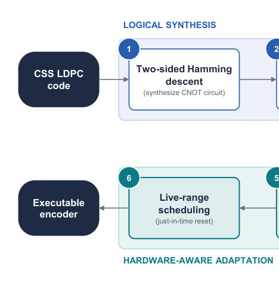
<figcaption class="paper-figure-caption"><b>Fig 1.</b> Figure 1: Our six-stage noise-aware encoder pipeline.</figcaption>
</figure>
<figure class="paper-figure-card">
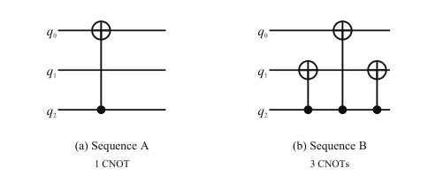
<figcaption class="paper-figure-caption"><b>Fig 2.</b> Figure 2: The same matrix 𝑀= 𝐼+ 𝑒0𝑒⊤ 2 on three qubits is realized by CNOT circuits of different length, hence by the same unitary. (a) one gate; (b) three gates. Filled dots are controls, ⊕targets.</figcaption>
</figure>
<figure class="paper-figure-card">

<figcaption class="paper-figure-caption"><b>Fig 3.</b> Figure 3: The same four-qubit matrix 𝑀is implemented by two CNOT circuits of different gate count, so the shorter one replaces the longer. (a) five gates; (b) three gates. Filled dots are controls, ⊕targets.</figcaption>
</figure>
<figure class="paper-figure-card">

<figcaption class="paper-figure-caption"><b>Fig 4.</b> Figure 4: The two-sided move space reduces the residual 𝐴to the identity from both ends. Front (column-operation) and back (row-operation) moves act on 𝐴while maintaining 𝑀= 𝐿𝐴𝑅. See Section 3.1.</figcaption>
</figure>
<figure class="paper-figure-card">
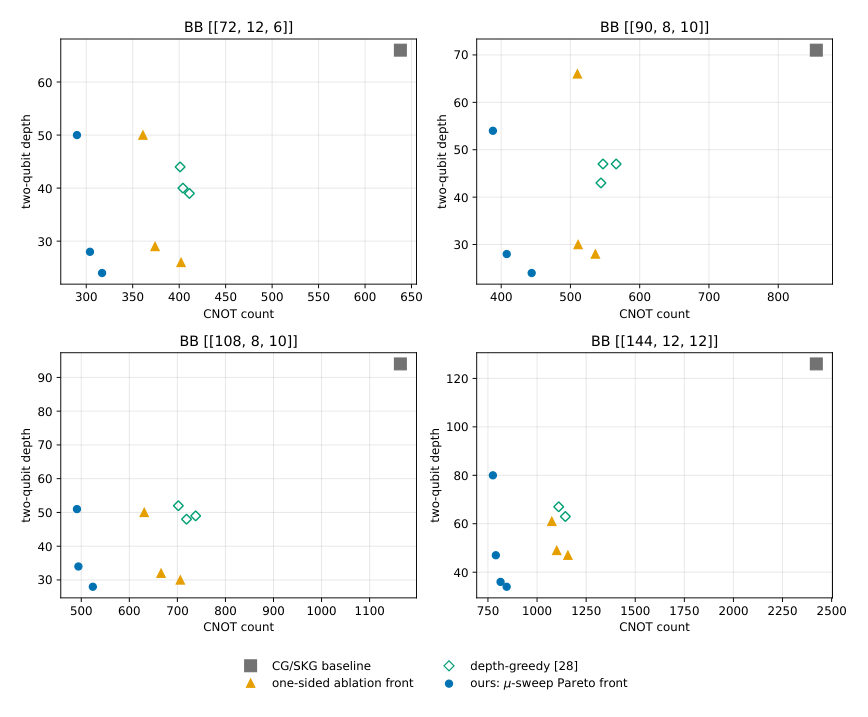
<figcaption class="paper-figure-caption"><b>Fig 5.</b> Figure 5: Count–depth Pareto frontiers on the four BB codes. The two-sided front (blue, ours) dominates the one-sided ablation front (orange), the depth-greedy method of [32] (green), and the CG/SKG construction (gray) on both count and depth for every BB code. The depth-greedy front is the Pareto-optimal subset of that method’s four cost functions over many restarts.</figcaption>
</figure>
</div>

<p><strong>Summary.</strong> This paper introduces a novel, multi-stage compiler pipeline to synthesize highly efficient quantum circuits for preparing LDPC encoded states. By combining 'two-sided Hamming descent' with hardware-aware scheduling and noise modeling, the authors achieve substantial reductions in gate count and circuit depth compared to existing methods. This work is critical for realizing fault-tolerant quantum computation on near-term devices.</p>
<p><strong>Why it may be interesting.</strong> This work directly addresses the practical implementation gap in quantum computation by providing a systematic, hardware-aware compilation technique to reduce circuit overhead and noise susceptibility for error correction codes.</p>
<details>
<summary>Detailed structure</summary>
<p><strong>Main problem.</strong> The core problem is efficiently synthesizing low-cost, noise-mitigating quantum circuits required to prepare encoded states for Quantum Low-Density Parity-Check (LDPC) codes.</p>
<p><strong>Main result.</strong> The proposed pipeline significantly reduces CNOT gate counts by an aggregate of 53.8% and reduces two-qubit depth by up to 71% compared to standard constructions, leading to higher fidelity state preparation.</p>
<p><strong>Method.</strong> It employs a novel optimization pipeline featuring 'two-sided Hamming descent' for circuit resynthesis, followed by commutation re-layering, hardware routing, and noise-aware live-range scheduling.</p>
<p><strong>Model / system.</strong> The system models fault-tolerant quantum computation using CSS LDPC codes (e.g., Bivariate Bicycle). The task is to find a minimal CNOT circuit implementing the encoder's linear-reversible matrix.</p>
<p><strong>Key observables.</strong> CNOT count, circuit depth (ASAP vs. commutation-aware), routed two-qubit count, and preparation error under hardware noise.</p>
<p><strong>Important parameters / regimes.</strong> The optimization balances gate count reduction against depth minimization using a penalty parameter $\mu$, and incorporates the idle-to-gate error ratio ($\kappa$) for noise selection.</p>
<p><strong>Assumptions / limitations.</strong> The method assumes knowledge of the target hardware's connectivity graph, which is used during routing and scheduling stages.</p>
<p><strong>Figures summary.</strong> Figures illustrate the six-stage noise-aware encoder pipeline, demonstrating how redundant CNOT structures can be systematically reduced via two-sided matrix operations.</p>
<p><strong>Paper structure.</strong> The paper introduces the problem of circuit redundancy in LDPC encoders, details the novel multi-stage optimization pipeline (including two-sided Hamming descent), presents quantitative results showing significant improvements over baselines, and concludes by positioning the method as a crucial compiler tool.</p>
</details>
<details>
<summary>Abstract</summary>
<p>Quantum low-density parity-check (LDPC) codes are a promising route to fault-tolerant quantum computation, but their use requires efficient preparation of encoded states. Standard encoder constructions generate circuits through fixed algebraic procedures, yet the resulting circuit can contain substantial redundancy. We formulate LDPC encoder preparation as a circuit-resynthesis problem: given the linear-reversible matrix implemented by the encoder's CNOT block, we seek a lower-cost equivalent circuit that can be routed efficiently on the target hardware and which mitigates noise. We propose a novel optimization approach referred as two-sided Hamming descent and a noise-aware optimization pipeline for this task.   Across several families of Calderbank-Shor-Steane (CSS) LDPC encoders, including Bivariate Bicycle, hypergraph-product, and entanglement-assisted codes, the proposed pipeline produces substantially smaller and shallower encoder circuits than the standard constructions and the synthesis baselines considered, cutting gate counts by 53.8% in aggregate across the benchmark and by up to 68% on the Bivariate Bicycle family. The gains remain visible after routing, where the two-qubit depth is reduced by up to 71% and translate into higher-fidelity state preparation under circuit-level noise. On the Bivariate Bicycle family, live-range scheduling further reduces routed preparation failure by up to 13.7% without adding two-qubit gates to the selected circuit. These results indicate that encoder-matrix resynthesis, combined with hardware-calibrated selection and scheduling, is an effective compiler-level tool for preparing quantum LDPC code states.</p>
</details>
<p><sub><a href="#top">↑ back to top</a></sub></p>

<p><a id="paper-2607.04538"></a></p>
<h3 id="security-of-quantum-conference-key-agreement-with-two-way-classical-communication"><a href="http://arxiv.org/abs/2607.04538v1">Security of Quantum Conference Key Agreement with Two-Way Classical Communication</a></h3>
<p><strong>Authors:</strong> Shun Kawakami, Mori Watanabe, Takuya Ikuta, Koichi Takasugi<br>
<strong>Type:</strong> theory · <strong>Category:</strong> quantum information and computing · <strong>PDF:</strong> <a href="https://arxiv.org/pdf/2607.04538v1">https://arxiv.org/pdf/2607.04538v1</a><br>
<strong>Analysis basis:</strong> full PDF text, analyzed in chunks
<strong>Topic relevance:</strong> <code>entanglement &amp; information structure</code> <strong>1/5</strong></p>
<div class="figure-strip-hint">↔ Scroll figures horizontally</div>
<div class="paper-figures-scroll">
<figure class="paper-figure-card">

<figcaption class="paper-figure-caption"><b>Fig 1.</b> FIG. 1. An example of the physically realizable region Tphys in the (s5, s6, s7) parameter space. Eqs. (30)–(32) define the interior of the parallelepiped. In this example, the boundary corresponding to Eq. (33) lies outside the parallelepiped.</figcaption>
</figure>
<figure class="paper-figure-card">
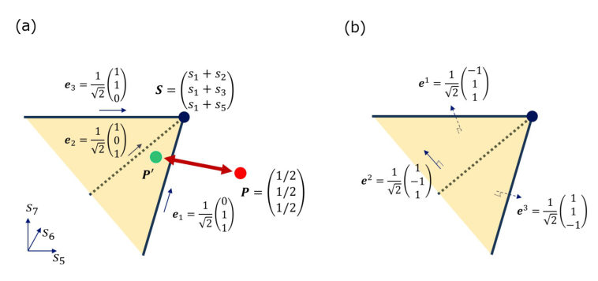
<figcaption class="paper-figure-caption"><b>Fig 2.</b> FIG. 2. The triangular pyramid Tpyramid defined in the s5, s6, s7 parameter space by the constraints Eq. (23), Eq. (25), Eq. (27). The corner of the pyramid corresponds to the upper-right corner of the parallelepiped in Fig. 1. (a) The edge unit vectors (covariant vectors) {ei} , the peak point S, the worst point P and the worst point P′ within Tpyramid. (b) The contravariant vectors {ei}.</figcaption>
</figure>
<figure class="paper-figure-card">
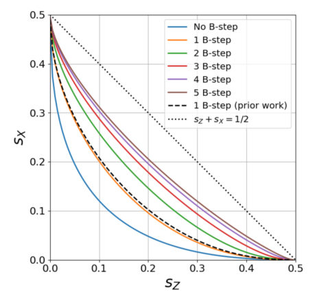
<figcaption class="paper-figure-caption"><b>Fig 3.</b> FIG. 3. Threshold curves (sZ, sX) for non-negative secure key rate R under the symmetric setting s1 = sX and s2 = s3 = s4 = sZ, with error- correction efficiency f = 1. The solid curves correspond to 0, 1, 2, 3, 4, and 5 applications of the B-step (from lower left to upper right). The region below each curve yields a non-negative secure key rate. The dashed curve shows the threshold obtained by using the previous analysis of a single B-step [14], and the dotted line indicates sZ + sX = 1/2, corresponding to the condition in Theorem 1. Repeated applications of the B-step significantly improve the threshold; in particular, along the symmetric line sZ = sX, the tolerable error rate increases...</figcaption>
</figure>
</div>

<p><strong>Summary.</strong> This paper analyzes the security of Quantum Conference Key Agreement using GHZ states, focusing on enhancing its resilience against noise. By incorporating multiple two-way classical communication steps (B-steps and P-steps), the authors derive that the tolerable error threshold can be significantly increased. This demonstrates a major improvement in the practical feasibility of QCKA for future quantum networks.</p>
<p><strong>Why it may be interesting.</strong> This work directly addresses practical limitations in quantum networking protocols by providing concrete methods (iterative B-steps) to enhance fault tolerance beyond current theoretical limits.</p>
<details>
<summary>Detailed structure</summary>
<p><strong>Main problem.</strong> The primary challenge is improving the tolerable error threshold for Quantum Conference Key Agreement (QCKA) protocols, which are crucial for future quantum networks.</p>
<p><strong>Main result.</strong> Iterative application of B-steps can significantly boost the tolerable error threshold beyond 20%, substantially enhancing the robustness of practical GHZ-based QCKA protocols.</p>
<p><strong>Method.</strong> The authors derive the asymptotic secure key rate by analytically analyzing the optimization problem associated with multiple B-steps and P-steps applied to the QCKA protocol.</p>
<p><strong>Model / system.</strong> The system models Quantum Conference Key Agreement (QCKA) among three users using tripartite Greenberger-Horne-Zeilinger (GHZ) states, restricted to two complementary measurement bases (Z and X).</p>
<p><strong>Key observables.</strong> Secure key rate ($R$) and the tolerable error threshold.</p>
<p><strong>Important parameters / regimes.</strong> Error rates ($  ext{s}_1,   ext{s}_2,   ext{s}_3,   ext{s}_4$), which are optimized subject to physical constraints derived from probability amplitudes.</p>
<p><strong>Assumptions / limitations.</strong> The analysis assumes an Independent and Identically Distributed (IID) interaction for the eavesdropper Eve across rounds, and that only two measurement bases are used for practical relevance.</p>
<p><strong>Paper structure.</strong> The paper systematically analyzes the security by defining the QCKA protocol using GHZ states. It then derives the key rate formula incorporating error correction steps (B-step, P-step) and solves the resulting optimization problem to maximize robustness against noise.</p>
</details>
<details>
<summary>Abstract</summary>
<p>Quantum conference key agreement (QCKA) enables multiple users to establish a common secret key with information-theoretic security and is regarded as a key primitive for secure communication in future quantum networks. However, practical implementations of QCKA typically suffer from higher noise levels than conventional bipartite quantum key distribution (QKD), making the improvement of the tolerable error threshold an important challenge. Gottesman and Lo proposed two preprocessing procedures for QKD with two-way classical communication, known as the B-step and the P-step, which enhance the tolerable error threshold. In this paper, we analyze the asymptotic security of QCKA with tripartite GHZ states and two measurement bases using two-way classical communication, including multiple B-steps and P-steps. We derive the corresponding secure key rate analytically and demonstrate that iterative B-steps can increase the tolerable error threshold beyond 20%, significantly improving upon the approximately 11% threshold achievable without two-way classical communication and the approximately 15% threshold obtained with only a single B-step. Our results show that two-way classical communication can substantially enhance the robustness of practical QCKA protocols.</p>
</details>
<p><sub><a href="#top">↑ back to top</a></sub></p>

<p><a id="paper-2607.03747"></a></p>
<h3 id="the-influence-of-the-transverse-electric-field-on-accelerating-vortex-state-in-the-axisymmetric-electric-field"><a href="http://arxiv.org/abs/2607.03747v1">The influence of the transverse electric field on accelerating vortex state in the axisymmetric electric field</a></h3>
<p><strong>Authors:</strong> Ziyang Ding, Ziqiang Huang, Qi Meng, Alexander J. Silenko, Pengming Zhang, Liping Zou<br>
<strong>Type:</strong> theory · <strong>Category:</strong> other · <strong>PDF:</strong> <a href="https://arxiv.org/pdf/2607.03747v1">https://arxiv.org/pdf/2607.03747v1</a><br>
<strong>Analysis basis:</strong> full PDF text, analyzed in chunks
<strong>Topic relevance:</strong> <code>non-equilibrium dynamics</code> <strong>1/5</strong></p>
<div class="figure-strip-hint">↔ Scroll figures horizontally</div>
<div class="paper-figures-scroll">
<figure class="paper-figure-card">

<figcaption class="paper-figure-caption"><b>Fig 1.</b> FIG. 1. The initial kinetic energy is 20 keV, w = 200 nm, w′ = 0, and different electric fields are considered. (a) Evo- lution of the beam width w(z). (b) Evolution of the wave front R(z). The blue line corresponds to free space, the red line to the uniform electric field 1.4 MV/m, the green line to the potential (24), and the yellow line to the potential V(z, r) = −2az2 ignoring transverse field (ITF).</figcaption>
</figure>
<figure class="paper-figure-card">

<figcaption class="paper-figure-caption"><b>Fig 2.</b> FIG. 2. (a) The potential distribution and its second-order derivative function on the axis of the immersion lens model. The initial kinetic energy is 20 keV. On the z = 0 plane, w0 = 200 nm, w′ = 0. (b) Evolution of the beam width w(z). (c) Evolution of the wave front R(z). The blue line corresponds to free space, the red line to immersion lens, and the green line to immersion lens that ignores transverse field (ITF).</figcaption>
</figure>
<figure class="paper-figure-card">
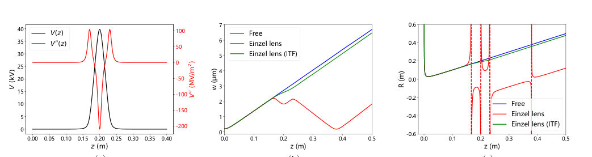
<figcaption class="paper-figure-caption"><b>Fig 3.</b> FIG. 3. (a) The potential distribution on the axis of the einzel lens model. (b) The evolution of beam width under this potential distribution. (c) Evolution of the wave front R(z). The initial kinetic energy is 20 keV. On the z = 0 plane, w0 = 200 nm and w′ 0 = 0. The blue line corresponds to free space, the red line to einzel lens, and the green line to einzel lens that ignores the transverse electric field (ITF).</figcaption>
</figure>
<figure class="paper-figure-card">

<figcaption class="paper-figure-caption"><b>Fig 4.</b> FIG. 4. Consider the process of increasing kinetic energy by 100 keV. (a) The evolution of beam width w(T) as kinetic energy increases. (b) The evolution of wave front R(T) as kinetic energy increases.</figcaption>
</figure>
</div>

<p><strong>Summary.</strong> This paper develops a relativistic quantum framework to analyze vortex beams of massive charged particles accelerated by non-uniform electrostatic fields. By deriving and solving coupled evolution equations for key parameters like beam width and wavefront curvature, the authors demonstrate that transverse electric field components critically modify beam focusing behavior in various experimental geometries. This offers theoretical control over particle beam propagation using purely electrostatic means.</p>
<p><strong>Why it may be interesting.</strong> This work bridges concepts from charged particle beam dynamics (often treated classically) with rigorous relativistic quantum mechanical formalism, providing insights into how fundamental electromagnetic fields shape quantized wave packets.</p>
<details>
<summary>Detailed structure</summary>
<p><strong>Main problem.</strong> The study investigates how a transverse electric field influences the evolution of relativistic vortex states carried by massive charged particles propagating through an axisymmetric accelerating electrostatic field.</p>
<p><strong>Main result.</strong> The transverse electric field significantly impacts beam focusing and wavefunction parameters, with its influence on wavefront curvature being more pronounced than its effect on beam width. The results provide a quantum framework for controlling these beams using electrostatic fields.</p>
<p><strong>Method.</strong> The analysis employs the Foldy-Wouthuysen transformation followed by the paraxial approximation to derive coupled evolution equations for beam width, wavefront curvature, and Gouy phase, which are then solved numerically.</p>
<p><strong>Model / system.</strong> The system models massive charged particles with orbital angular momentum (vortex states) accelerated in various electrostatic potentials, including those mimicking Penning traps, immersion lenses, and Einzel lenses. The dynamics are governed by relativistic quantum equations simplified via the paraxial approximation.</p>
<p><strong>Key observables.</strong> Beam width ($w(z)$), wavefront curvature radius ($R(z)$), and Gouy phase ($\Phi_G(z)$).</p>
<p><strong>Important parameters / regimes.</strong> Longitudinal acceleration parameter $K(z)$, transverse field correction $\alpha(z)r^2$, and the potential derivatives $V''(z)$.</p>
<p><strong>Assumptions / limitations.</strong> The analysis relies heavily on the paraxial approximation, and higher-order terms in the Scherzer expansion are neglected.</p>
<p><strong>Figures summary.</strong> Figures compare beam evolution ($w(z)$ and $R(z)$) for different field geometries (free space, uniform, quadratic potential) as kinetic energy increases by a fixed amount (100 keV).</p>
<p><strong>Paper structure.</strong> The paper first derives the governing equations using relativistic quantum mechanics approximations. It then applies these equations to model beam propagation in specific physical setups: Penning traps, immersion lenses, and Einzel lenses, comparing results against longitudinal-only field models.</p>
</details>
<details>
<summary>Abstract</summary>
<p>The relativistic vortex states of massive charged particles propagating in non-uniform axisymmetric electric field are studied. Starting from the stationary-state equation after the relativistic Foldy-Wouthuysen (FW) transformation and employing the paraxial approximation, the coupled evolution equations for the beam width, wavefront curvature, and Gouy phase are derived. The equations are solved numerically for a quadratic electrostatic potential, an immersion lens, and an einzel lens. The essential influence of the transverse field on beam evolution is demonstrated. The results provide a relativistic quantum framework for controlling accelerated vortex particle beams using electrostatic fields.</p>
</details>
<p><sub><a href="#top">↑ back to top</a></sub></p>

<p><a id="paper-2607.04483"></a></p>
<h3 id="topological-effects-in-the-polarization-of-the-fulling-rindler-vacuum"><a href="http://arxiv.org/abs/2607.04483v1">Topological effects in the polarization of the Fulling-Rindler vacuum</a></h3>
<p><strong>Authors:</strong> A. A. Saharian, G. V. Mirzoyan, V. S. Torosyan<br>
<strong>Type:</strong> theory · <strong>Category:</strong> other · <strong>PDF:</strong> <a href="https://arxiv.org/pdf/2607.04483v1">https://arxiv.org/pdf/2607.04483v1</a><br>
<strong>Analysis basis:</strong> full PDF text, analyzed in chunks
<strong>Topic relevance:</strong> <code>Keldysh / 2PI / non-Gaussian methods</code> <strong>1/5</strong></p>
<div class="figure-strip-hint">↔ Scroll figures horizontally</div>
<div class="paper-figures-scroll">
<figure class="paper-figure-card">

<figcaption class="paper-figure-caption"><b>Fig 1.</b> Figure 1: The VEV of the field squared for a massless field as a function of ξ/L in the D = 4 model (left panel). The graphs are plotted for ˜αD = 0 and ˜αD/2π = 0.4 (the numbers near the curves). The dot-dashed curve corresponds to the VEV in the Rindler spacetime with trivial topology. The right panel presents the dependence on ˜αD/2π. The numbers near the curves are the values of ξ/L.</figcaption>
</figure>
<figure class="paper-figure-card">
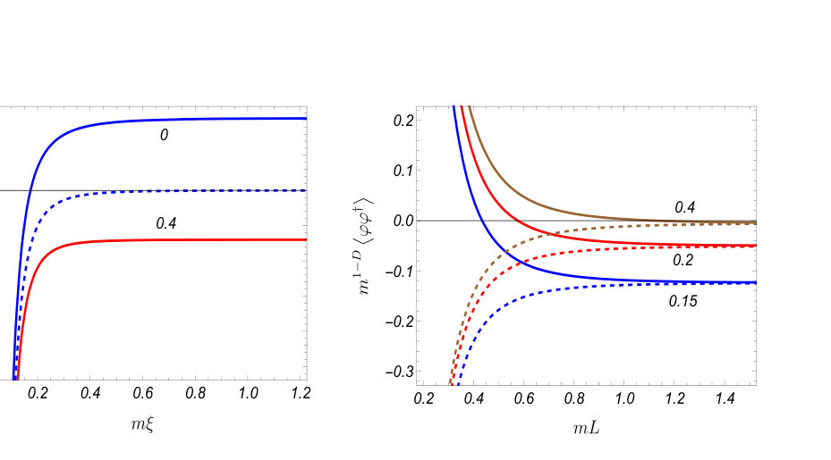
<figcaption class="paper-figure-caption"><b>Fig 2.</b> Figure 2: The VEV of the field squared for a massive field as a function of inverse proper acceleration (left panel) and the length of compact dimension (right panel) in units of the Compton wavelength. The numbers near the curves on the left and right panels are the values of ˜αD/2π and mξ, respectively. The full and dashed curves on the right panel are plotted for ˜αD/2π = 0 and ˜αD/2π = 0.4.</figcaption>
</figure>
<figure class="paper-figure-card">
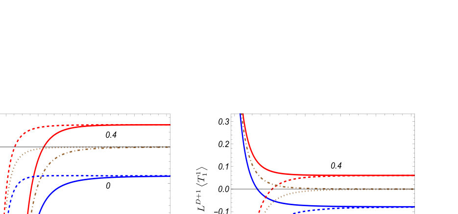
<figcaption class="paper-figure-caption"><b>Fig 3.</b> Figure 3: The vacuum energy density (left panel) and 1 1-stress for a massles scalar field versus the ratio ξ/L. The full and dashed curves correspond to minimally and conformally coupled fields and the numbers near the curves are the values of ˜αD/2π. The dot-dashed and dotted curves present the corresponding VEVs in the Rindler spacetime without compact dimensions.</figcaption>
</figure>
<figure class="paper-figure-card">

<figcaption class="paper-figure-caption"><b>Fig 4.</b> Figure 4: The same as in Fig. 3 for the stresses ⟨T 2 2 ⟩(left panel) and ⟨T 4 4 ⟩(right panel).</figcaption>
</figure>
<figure class="paper-figure-card">
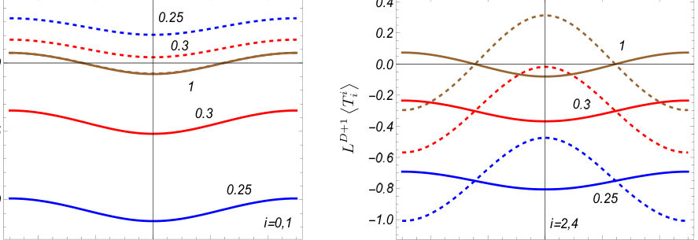
<figcaption class="paper-figure-caption"><b>Fig 5.</b> Figure 5: The vacuum energy-momentum tensor ⟨T i i ⟩as a functions of ˜αD/2π for a minimally coupled massless field in 4 + 1-dimensional Rindler spacetime with a single compact dimension. The left and right panels correspond to the components i = 0, 1 and i = 2, 4, and the numbers near the curves are the values of the ratio ξ/L. The full and dashed curves correspond to i = 0, 2 and i = 1, 4, respectively.</figcaption>
</figure>
</div>

<p><strong>Summary.</strong> This paper analyzes the impact of compactifying spatial dimensions on the vacuum energy and field correlations for a charged scalar field in Rindler spacetime. It shows that topological fluxes introduce non-trivial off-diagonal components to the stress-energy tensor, while most deviations from the Minkowski vacuum are exponentially small near the horizon. The work applies these findings to model black hole horizons with toroidal topology.</p>
<p><strong>Why it may be interesting.</strong> The study provides a concrete example of how topology (compactification) modifies vacuum structure in curved spacetime backgrounds, which is relevant for understanding quantum field theory effects near horizons or in condensed matter systems with periodic boundary conditions.</p>
<details>
<summary>Detailed structure</summary>
<p><strong>Main problem.</strong> The study investigates how compactifying spatial dimensions in Rindler spacetime affects the vacuum expectation values (VEVs) of field observables for a charged scalar field.</p>
<p><strong>Main result.</strong> Topological effects manifest as off-diagonal components in the energy-momentum tensor and cause deviations from Minkowski vacua, which are generally exponentially small near the horizon unless specific massless conditions are met.</p>
<p><strong>Method.</strong> The analysis uses quasiperiodicity boundary conditions on the field operator along compact dimensions and calculates VEVs using Hadamard function representations.</p>
<p><strong>Model / system.</strong> The system is a charged scalar field in a background spacetime locally resembling Rindler space with additional toroidal compactification ($\mathbb{R}^p 	imes (S^1)^q$).</p>
<p><strong>Key observables.</strong> VEVs of the field squared ($\langle\phi^2
angle$) and components of the energy-momentum tensor ($\langle T_{\mu
u}
angle$).</p>
<p><strong>Important parameters / regimes.</strong> Proper acceleration, compactification lengths ($L_l$), magnetic fluxes ($\Phi_l$), and the mass of the scalar field.</p>
<p><strong>Assumptions / limitations.</strong> The analysis assumes quasiperiodicity conditions on the field operator along compact dimensions and utilizes asymptotic expansions near the Rindler horizon.</p>
<p><strong>Figures summary.</strong> Figure 1 illustrates the dependence of $\langle\phi\phi^\dagger
angle$ on the phase shift ($  ilde{\alpha}_D/2\pi$) for different topologies, comparing results to the trivial topology case.</p>
<p><strong>Paper structure.</strong> The paper systematically analyzes VEVs by first establishing the mathematical framework using gauge transformations and quasiperiodicity conditions. It then calculates $\langle\phi^2
angle$ and $\langle T_{\mu
u}
angle$, demonstrating how topological fluxes induce non-trivial components, before applying these results to black hole horizons.</p>
</details>
<details>
<summary>Abstract</summary>
<p>We investigate how the compactification of some spatial dimensions in Rindler spacetime affects the vacuum expectation values (VEVs) of the field squared and the energy-momentum tensor for a charged scalar field prepared in the Fulling-Rindler vacuum state. A toral compactification is considered with quasi-periodicity conditions on the field operator along the compact dimensions. The phases of these conditions are interpreted in terms of the magnetic flux enclosed by the compact dimensions. For a general number of spatial dimensions, the components of the VEVs are explicitly separated, corresponding to the expectation values in the Minkowski vacuum. As a limiting case, the VEVs are retrieved in Rindler spacetime with trivial topology. We demonstrate that, for non-zero phases in the periodicity conditions, the vacuum energy-momentum tensor exhibits off-diagonal components with indices in the compact subspace. Near the Rindler horizon, the leading terms in the asymptotic expansions of the field squared and the diagonal components of the energy-momentum tensor coincide with the corresponding VEVs in Rindler spacetime with trivial topology. The off-diagonal components of the energy-momentum tensor vanish on the Rindler horizon. For small accelerations, the difference between the VEVs in the Fulling-Rindler and Minkowski vacua is exponentially small. The exception to this is a massless field with zero phases in the periodicity conditions. In this special case, the difference decays according to a power law as a function of acceleration. As an application, we consider the VEVs near the horizon of cylindrical black holes and topological black holes with toroidal horizons.</p>
</details>
<p><sub><a href="#top">↑ back to top</a></sub></p>
<h2 id="other-papers-12">Other papers (12)</h2>
<p><em>Papers from primary archives without highlighted authors or any topic match. Click to expand.</em></p>
<details>
<summary>Show other papers</summary>

<p><a id="paper-2607.03805"></a></p>
<h3 id="a-regularization-method-for-quantum-neural-networks-using-data-symmetry"><a href="http://arxiv.org/abs/2607.03805v1">A regularization method for quantum neural networks using data symmetry</a></h3>
<p><strong>Authors:</strong> Hiroshi Ohno<br>
<strong>Type:</strong> both · <strong>Category:</strong> disordered systems and neural networks · <strong>PDF:</strong> <a href="https://arxiv.org/pdf/2607.03805v1">https://arxiv.org/pdf/2607.03805v1</a><br>
<strong>Analysis basis:</strong> full PDF text, analyzed in chunks</p>
<div class="figure-strip-hint">↔ Scroll figures horizontally</div>
<div class="paper-figures-scroll">
<figure class="paper-figure-card">

<figcaption class="paper-figure-caption"><b>Fig 1.</b> Figure 1: Configurations for four qubit entangling circuits. R denotes a two-qubit gate implementing a controlled Pauli operator (X or Z).</figcaption>
</figure>
<figure class="paper-figure-card">
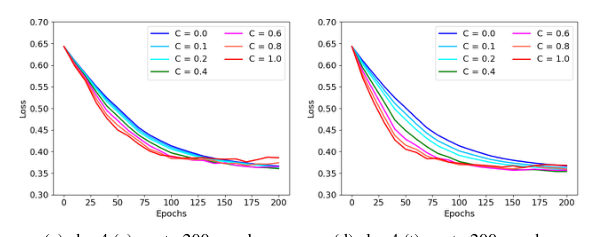
<figcaption class="paper-figure-caption"><b>Fig 2.</b> Figure 3: Loss results for classification tasks (depth 2 and 4). (e) denotes the results using the empirical ρin(x) (M = 100): (t) denotes the results using the theoretical ρin(x) (Eq. 21). C denotes a balancing parameter.</figcaption>
</figure>
<figure class="paper-figure-card">
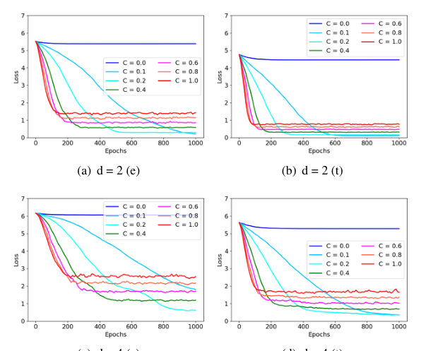
<figcaption class="paper-figure-caption"><b>Fig 3.</b> Figure 4: Loss results for the penalty loss Csymm for classification tasks. (e) denotes the results using the empirical ρin(x) (M = 100); (t) denotes the results using the theoretical ρin(x) (Eq. 21).</figcaption>
</figure>
<figure class="paper-figure-card">
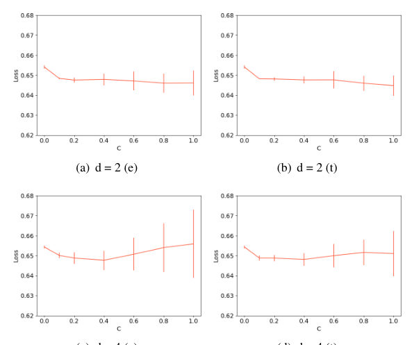
<figcaption class="paper-figure-caption"><b>Fig 4.</b> Figure 5: Test loss results for classification tasks with respect to a balancing parameter C (∈ {0, 0.1, 0.2, 0.4, 0.6, 0.8, 1.0}). (e) denotes the results using the empirical ρin(x) (M = 100). (t) denotes the results using the theoretical ρin(x) (Eq. 21). Error bar denotes a standard deviation.</figcaption>
</figure>
<figure class="paper-figure-card">
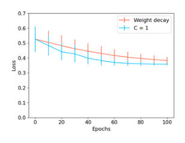
<figcaption class="paper-figure-caption"><b>Fig 5.</b> Figure 6: Comparison results of the weight decay method and the proposed method (C = 1). Error bar denotes a standard deviation.</figcaption>
</figure>
</div>
<p><strong>Summary.</strong> This paper introduces a regularization technique for Quantum Neural Networks (QNNs) that leverages inherent data symmetries to enhance training efficiency and generalization. By adding a penalty term based on symmetry constraints, the method improves performance in both classification and generative tasks. The work combines empirical validation with theoretical bounds derived from Rademacher complexity.</p>
<p><strong>Why it may be interesting.</strong> This work directly addresses the intersection of quantum computation and machine learning theory by providing a principled way to regularize variational quantum circuits using underlying physical symmetries, which is relevant for designing robust quantum algorithms.</p>
<details>
<summary>Detailed structure</summary>
<p><strong>Main problem.</strong> The study aims to improve the generalization performance and accelerate training of Quantum Neural Networks (QNNs) by incorporating constraints derived from input data symmetries.</p>
<p><strong>Main result.</strong> The proposed symmetry-based regularization method leads to faster convergence and lower test errors across both classification and quantum generative adversarial network tasks. Theoretically, it provides a bound suggesting improved generalization when the model respects data symmetry.</p>
<p><strong>Method.</strong> A novel penalty term, $C_{	ext{symm}}$, is added to the cost function, penalizing deviations between the parameterized unitary circuit and the unitary derived from the input data symmetry. Theoretical analysis uses Rademacher complexity bounds to quantify generalization improvements.</p>
<p><strong>Model / system.</strong> The model consists of QNNs implemented via parameterized quantum circuits $U(	heta)$, whose output is measured by an expectation value $\langle\psi(x, 	heta)| O |\psi(x, 	heta)
angle$. The input data symmetry is characterized by the commutation relation $[
ho_{	ext{in}}(x), S] = 0$.</p>
<p><strong>Key observables.</strong> Test errors (classification), FID scores (generative tasks), penalty loss ($C_{	ext{symm}}$), and Rademacher complexity ($\mathcal{R}_{\Theta}(F)$).</p>
<p><strong>Important parameters / regimes.</strong> The balancing parameter $C$ controlling the regularization strength, and the choice of matrix norm used in theoretical bounds.</p>
<p><strong>Assumptions / limitations.</strong> The method assumes that enforcing data symmetry acts as a beneficial inductive bias. A limitation noted is that excessive symmetries can overly restrict expressibility.</p>
<p><strong>Figures summary.</strong> Figures show loss curves for classification tasks comparing $C=0$ vs. $C>0$, and FID scores for generative tasks, illustrating the impact of the regularization strength on training stability and performance.</p>
<p><strong>Paper structure.</strong> The paper introduces the problem, details the symmetry-based regularization method ($C_{	ext{symm}}$), validates it empirically across classification and QGAN tasks using various circuit types (AA, CB), and supports these findings with theoretical generalization bounds derived from Rademacher complexity.</p>
</details>
<details>
<summary>Abstract</summary>
<p>Leveraging data symmetries has recently become a key strategy in quantum neural networks (QNNs) to improve generalization and training efficiency. In this study, we propose a novel regularization method for QNNs based on input data symmetry. By introducing a penalty term that encourages the model to align with data symmetry, our method enables improved training speed and generalization. This symmetry-based regularization is simple to implement and does not require prior knowledge of the symmetry group. We validate its effectiveness through numerical experiments on both classification tasks and quantum generative adversarial networks. Empirical results demonstrate faster convergence and lower test errors. Furthermore, we provide a theoretical generalization bound using Rademacher complexity and conjecture a condition under which models with symmetry exhibit better generalization. Our findings highlight the potential of symmetry-aware regularization in enhancing the performance of QML models.</p>
</details>
<p><sub><a href="#top">↑ back to top</a></sub></p>

<p><a id="paper-2607.03982"></a></p>
<h3 id="a-semantic-framework-for-reproducible-variational-quantum-algorithm-execution-records"><a href="http://arxiv.org/abs/2607.03982v1">A Semantic Framework for Reproducible Variational Quantum Algorithm Execution Records</a></h3>
<p><strong>Authors:</strong> Silvie Illésová, Martin Beseda<br>
<strong>Type:</strong> theory · <strong>Category:</strong> quantum information and computing · <strong>PDF:</strong> <a href="https://arxiv.org/pdf/2607.03982v1">https://arxiv.org/pdf/2607.03982v1</a><br>
<strong>Analysis basis:</strong> full PDF text, analyzed in chunks</p>
<div class="figure-strip-hint">↔ Scroll figures horizontally</div>
<div class="paper-figures-scroll">
<figure class="paper-figure-card">
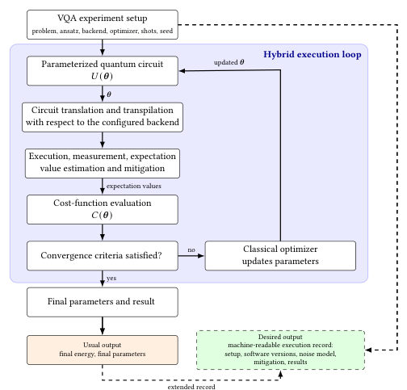
<figcaption class="paper-figure-caption"><b>Fig 1.</b> Figure 1: General workflow of a variational quantum algo- rithm execution.</figcaption>
</figure>
<figure class="paper-figure-card">
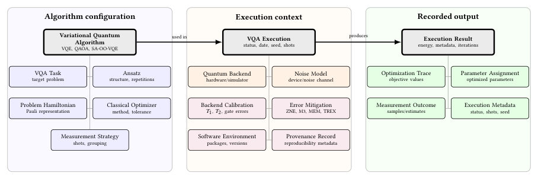
<figcaption class="paper-figure-caption"><b>Fig 2.</b> Figure 2: Compact overview of the VQA ontology as an execution record. The ontology connects algorithm configuration, execution context, and recorded outputs required for validation, querying, and reproducibility.</figcaption>
</figure>
</div>
<p><strong>Summary.</strong> This paper introduces a semantic framework using OWL ontologies to structure Variational Quantum Algorithm (VQA) execution records. It models every interacting choice—from ansatzes to noise models—into machine-readable artifacts. This allows researchers to rigorously validate, compare, and reproduce VQA results by querying the complete execution context.</p>
<p><strong>Why it may be interesting.</strong> This work provides crucial infrastructure for quantum software engineering, allowing researchers to systematically track and compare results across different hardware platforms and algorithmic choices, which is vital for advancing the field beyond single successful demonstrations.</p>
<details>
<summary>Detailed structure</summary>
<p><strong>Main problem.</strong> Variational Quantum Algorithms (VQAs) generate results dependent on numerous interacting choices, making current execution records difficult to reproduce, compare, debug, and reuse due to scattered metadata.</p>
<p><strong>Main result.</strong> The authors propose an ontology-supported framework that successfully represents complete VQA execution contexts and can detect missing or malformed metadata using formal validation techniques.</p>
<p><strong>Method.</strong> They define a Web Ontology Language (OWL) ontology to model all key entities in VQA experimentation, augmenting it with SHACL constraints for validation and SPARQL queries for information retrieval.</p>
<p><strong>Model / system.</strong> The framework models the entire hybrid quantum-classical execution loop of VQAs, covering components like algorithms (VQE), ansatzes, Hamiltonians, optimizers, backends, noise models, and measurement outcomes.</p>
<p><strong>Key observables.</strong> Complete VQA execution contexts, detection of missing/malformed metadata, and queryable information needed for reproducible quantum software experimentation.</p>
<p><strong>Important parameters / regimes.</strong> Ansatz structure, Hamiltonian representation, optimizer configuration, shot count, noise model parameters, and software versions.</p>
<p><strong>Assumptions / limitations.</strong> The core assumption is that structuring the execution context semantically (via ontology) can solve the problem of metadata fragmentation across disparate sources.</p>
<p><strong>Figures summary.</strong> Figure 1 contrasts typical VQA output with a desired machine-readable execution record. Table 1 summarizes the main ontology classes grouped by conceptual module, and Figure 2 provides an overview connecting algorithm configuration to recorded outputs.</p>
<p><strong>Paper structure.</strong> The paper introduces the problem of VQA reproducibility, proposes the OWL/SHACL/SPARQL framework using a detailed ontology structure (covering execution, algorithm, problem, etc.), demonstrates its utility with VQE records, and concludes by showing how it enables query-based inspection of necessary metadata.</p>
</details>
<details>
<summary>Abstract</summary>
<p>Variational quantum algorithms are hybrid quantum-classical workflows whose results depend on many interacting choices, including the ansatz, Hamiltonian, optimizer, backend, shot count, noise model, mitigation method, random seed, stopping criteria, and software versions. In current practice, this information is often scattered across code, configuration files, logs, backend metadata, and paper descriptions, making executions difficult to reproduce, compare, debug, and reuse. This paper proposes an ontology-supported framework for representing Variational Quantum Algorithm (VQA) execution records as structured and machine-readable software engineering artifacts. The framework defines a Web Ontology Language (OWL) ontology for modeling the main entities involved in VQA experimentation, including algorithms, circuits, ansatzes, Hamiltonians, optimizers, backends, noise models, mitigation techniques, execution steps, software environments, measurement outcomes, and results. It further combines the ontology with Shapes Constraint Language (SHACL) constraints for validating completeness and consistency, and SPARQL Protocol and RDF Query Language (SPARQL) competency queries for retrieving reproducibility-relevant information. We demonstrate the approach using Variational Quantum Eigensolver (VQE) execution records, including a valid record and intentionally incomplete or inconsistent examples. The results show that the framework can represent complete VQA execution contexts, detect missing or malformed metadata, and support query-based inspection of information needed for reproducible quantum software experimentation.</p>
</details>
<p><sub><a href="#top">↑ back to top</a></sub></p>

<p><a id="paper-2607.04289"></a></p>
<h3 id="chromatic-completeness-and-the-independence-of-geometric-obstruction"><a href="http://arxiv.org/abs/2607.04289v1">Chromatic Completeness and the Independence of Geometric Obstruction</a></h3>
<p><strong>Authors:</strong> Karl Svozil<br>
<strong>Type:</strong> theory · <strong>Category:</strong> other · <strong>PDF:</strong> <a href="https://arxiv.org/pdf/2607.04289v1">https://arxiv.org/pdf/2607.04289v1</a><br>
<strong>Analysis basis:</strong> full PDF text, analyzed in chunks</p>
<div class="figure-strip-hint">↔ Scroll figures horizontally</div>
<div class="paper-figures-scroll">
<figure class="paper-figure-card">

<figcaption class="paper-figure-caption"><b>Fig 1.</b> Low-resolution page preview, page 2</figcaption>
</figure>
<figure class="paper-figure-card">

<figcaption class="paper-figure-caption"><b>Fig 2.</b> Low-resolution page preview, page 3</figcaption>
</figure>
<figure class="paper-figure-card">
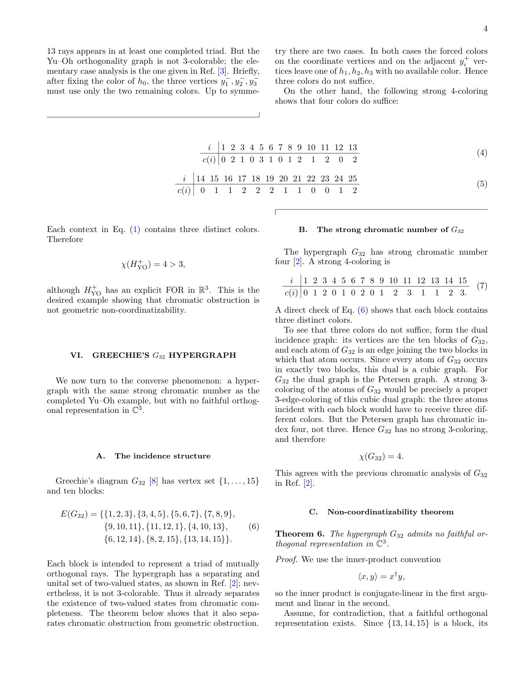
<figcaption class="paper-figure-caption"><b>Fig 3.</b> Low-resolution page preview, page 4</figcaption>
</figure>
<figure class="paper-figure-card">
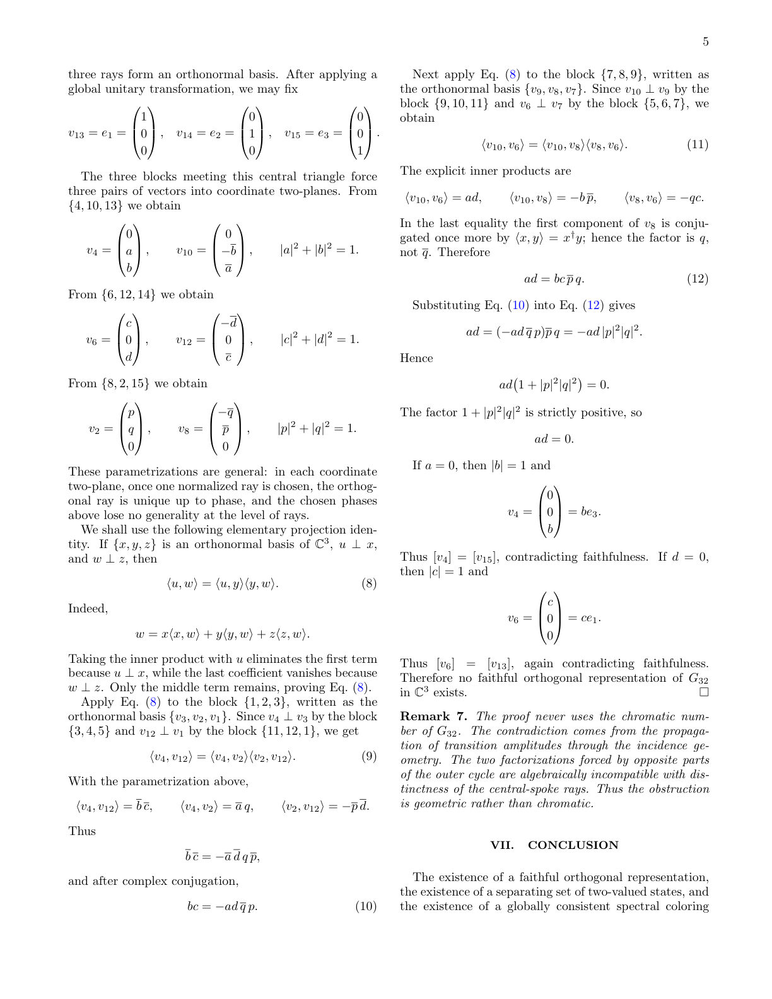
<figcaption class="paper-figure-caption"><b>Fig 4.</b> Low-resolution page preview, page 5</figcaption>
</figure>
<figure class="paper-figure-card">

<figcaption class="paper-figure-caption"><b>Fig 5.</b> Low-resolution page preview, page 6</figcaption>
</figure>
</div>
<p><strong>Summary.</strong> This theoretical paper proves that two ways of characterizing structure in orthogonality hypergraphs—chromatic completeness and geometric coordinatizability—are logically independent. By comparing the Yu-Oh graph and Greechie's $G_{32}$, the authors show that a high chromatic number does not guarantee, nor is it guaranteed by, the existence of a faithful orthogonal representation in complex space. This separates spectral labeling issues from fundamental geometric embedding problems.</p>
<p><strong>Why it may be interesting.</strong> It provides a deep mathematical framework for understanding when physical constraints (like orthogonality in Hilbert space) force global consistency conditions, which is relevant to quantum contextuality and measurement theory.</p>
<details>
<summary>Detailed structure</summary>
<p><strong>Main problem.</strong> The paper aims to establish a strict logical separation between two concepts in orthogonality hypergraphs: chromatic completeness (global spectral consistency) and geometric coordinatizability (existence of a faithful orthogonal representation).</p>
<p><strong>Main result.</strong> Chromatic completeness and geometric coordinatizability are proven to be logically independent, demonstrated by comparing the Yu-Oh configuration and Greechie's G32 graph.</p>
<p><strong>Method.</strong> The authors use algebraic proofs involving inner products on hypergraphs derived from orthogonality relations to distinguish between coloring obstructions and purely projective-geometric obstructions.</p>
<p><strong>Model / system.</strong> The analysis is performed on abstract mathematical structures called orthogonality hypergraphs $H=(V, E)$, where vertices represent rays in $\mathbb{C}^n$ or $\mathbb{R}^n$, and edges (contexts) are sets of mutually orthogonal rays.</p>
<p><strong>Key observables.</strong> Strong chromatic number ($\chi(H)$), existence of a Faithful Orthogonal Representation (FOR).</p>
<p><strong>Important parameters / regimes.</strong> The dimension $n$ (e.g., $\mathbb{R}^3, \mathbb{C}^3$), and the specific hypergraph structure ($H_{YO}, G_{32}$).</p>
<p><strong>Assumptions / limitations.</strong> The separation relies on comparing global labeling conditions against local geometric realization constraints.</p>
<p><strong>Figures summary.</strong> Not specified in notes; the comparison is made through explicit construction of two different 3D examples (Yu-Oh and $G_{32}$) with matching chromatic numbers but differing realizability properties.</p>
<p><strong>Paper structure.</strong> The paper introduces the concepts, proves their independence using specific counterexamples ($H_{YO}$ vs. $G_{32}$), and concludes by formalizing that spectral labeling issues are distinct from geometric embedding constraints.</p>
</details>
<details>
<summary>Abstract</summary>
<p>We establish a strict logical separation between two distinct phenomena in orthogonality hypergraphs: chromatic completeness, the possibility of assigning a single globally consistent nondegenerate spectrum to all contexts, and geometric coordinatizability, the existence of a faithful orthogonal representation by rays. A strong chromatic number larger than the Hilbert-space dimension obstructs only the former. It does not, by itself, obstruct the existence of a faithful orthogonal representation. We make this separation explicit by comparing two three-dimensional examples with the same strong chromatic number. A completed 25-ray version of the Yu-Oh configuration has strong chromatic number four and nevertheless possesses an explicit faithful orthogonal representation in R^3. Conversely, Greechie's G_{32} hypergraph also has strong chromatic number four, and has a separating and unital set of two-valued states, but we give an elementary algebraic proof that it admits no faithful orthogonal representation in C^3. The obstruction in G_{32} is therefore not chromatic but projective-geometric: the incidence relations force two distinct atoms to collapse onto the same ray.</p>
</details>
<p><sub><a href="#top">↑ back to top</a></sub></p>

<p><a id="paper-2607.05107"></a></p>
<h3 id="complementary-3d-color-codes-for-transversal-quantum-logic"><a href="http://arxiv.org/abs/2607.05107v1">Complementary 3D color codes for transversal quantum logic</a></h3>
<p><strong>Authors:</strong> Friederike Butt, Luis Colmenarez, Erik Weilandt, Tom Peham, Robert Wille, Markus Müller<br>
<strong>Type:</strong> theory · <strong>Category:</strong> quantum information and computing · <strong>PDF:</strong> <a href="https://arxiv.org/pdf/2607.05107v1">https://arxiv.org/pdf/2607.05107v1</a><br>
<strong>Analysis basis:</strong> full PDF text, analyzed in chunks</p>
<div class="figure-strip-hint">↔ Scroll figures horizontally</div>
<div class="paper-figures-scroll">
<figure class="paper-figure-card">

<figcaption class="paper-figure-caption"><b>Fig 1.</b> Figure 1. The [[15, 1, 3]] code and its Hadamard-transformed version. (a) The X-stabilizer generators of the [[15, 1, 3]] tetrahedral color code are supported on the red (R), blue (B), green (G) and yellow (Y) cell formed by eight qubits each. Ten independent Z-stabilizers are defined on weight-4 faces within the tetrahedron. (b) The support of X- and Z-stabilizers is interchanged on the Hadamard-transformed tetrahedral code [[15, 1, 3]]H: X-stabilizers are supported by faces and Z-stabilizers are supported by cells. (c) The joint gate set of both code variants comprises the logical CNOT between the same code types, the T gate on the [[15, 1, 3]] code and the TX gate on the [[15, 1, 3]]H...</figcaption>
</figure>
<figure class="paper-figure-card">

<figcaption class="paper-figure-caption"><b>Fig 2.</b> Figure 2. Transversal operations in the hybrid architecture. (a) If the control qubit is encoded in the [[15, 1, 3]] code and the target in the Hadamard-transformed [[15, 1, 3]]H code, cell-like stabilizers propagate to face-like stabilizers. This operation preserves the codespace because both control and target are a +1-eigenstate of the X-cells. The transversal CNOT gate in the reverse direction (b) does not preserve the codespace, because an X-face propagates from control to the target code that is not an eigenstate of the respective face-like stabilizer. (c) The hybrid architecture admits a transversal Toffoli gate if the two control qubits are encoded in [[15, 1, 3]] codes and the...</figcaption>
</figure>
<figure class="paper-figure-card">
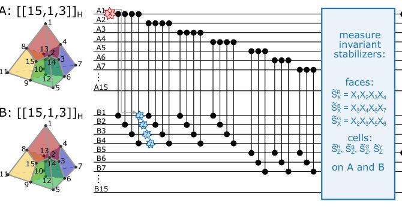
<figcaption class="paper-figure-caption"><b>Fig 3.</b> Figure 3. Round-robin CZ gate on the rotated tetrahedral [[15, 1, 3]]H code. The round-robin gate applies seven layers of permuted transversal CZ gates on qubits 1–7 of code blocks A and B. Since physical CZ gates commute, we can rearrange the gate ordering, as illustrated in App. Fig. 8. In doing so, the protocol becomes symmetric between the two registers, which allows us to use the same lookup tables for both logical code blocks. The subset of invariant stabilizers remain unchanged throughout the whole protocol. This subset of stabilizers is extracted in the middle of the circuit (blue box). Specifically, we measure the red, blue and green X-faces and three out of four Z-cells of both...</figcaption>
</figure>
<figure class="paper-figure-card">
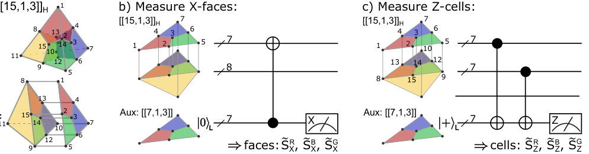
<figcaption class="paper-figure-caption"><b>Fig 4.</b> Figure 4. Fault-tolerant stabilizer extraction on tetrahedral 3D color codes. (a) A 3D tetrahedral color code can be viewed as layers of 2D color codes, similarly to stacked color codes [46]. (b) The red, green and blue X-stabilizers, SR X, SB X, SG X can be measured fault-tolerantly using a variant of Steane’s method for FT syndrome extraction [47]. We fault-tolerantly prepare a logical auxiliary qubit in |0⟩of a 2D color code by verifying the prepared logical state after running a unitary encoding [48], as shown in App. Fig. 7. In a second step, we apply a transversal CNOT gate between the top layer of the 3D code instance (qubit 1–7) and the logical auxiliary qubit. Measuring the...</figcaption>
</figure>
<figure class="paper-figure-card">
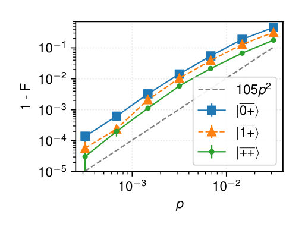
<figcaption class="paper-figure-caption"><b>Fig 5.</b> Figure 5. Logical state fidelities for the fault-tolerant round-robin CZ gate. The CZ gate is run on two [[15, 1, 3]]H codes which do not admit a transversal imple- mentation of this operation. The gate construction is fully symmetric between the two logical qubits. The logical state fidelities are determined as described in App. E for two logi- cal qubit input states |0+⟩, |1+⟩, and |++⟩. The gray dashed line corresponds to the approximated logical infidelity of a transversal CNOT gate, assuming that any two faults con- tribute to the logical infidelity.</figcaption>
</figure>
</div>
<p><strong>Summary.</strong> This paper addresses the challenge of building universal fault-tolerant quantum computation by proposing a hybrid architecture combining two related 3D color codes. By leveraging complementary transversal operations, they achieve an almost-universal gate set, completing it through a complex round-robin construction for the necessary entangling gates. This provides a new pathway to implement hard algorithms while keeping most required operations transversal.</p>
<p><strong>Why it may be interesting.</strong> While highly theoretical, the focus on resource optimization (concentrating non-transversal gates) and using structured codes like color codes is relevant to designing practical quantum hardware architectures that minimize error correction overhead.</p>
<details>
<summary>Detailed structure</summary>
<p><strong>Main problem.</strong> Achieving a universal set of transversal logical gates for fault-tolerant quantum computation, which is restricted by the Eastin–Knill theorem.</p>
<p><strong>Main result.</strong> The authors propose a hybrid architecture using two complementary color codes (tetrahedral and H-tetrahedral) to realize an almost-universal gate set, completing universality via a complex round-robin construction for the entangling CZ gate.</p>
<p><strong>Method.</strong> The approach combines bitwise Hadamard transformations between two related quantum error-correcting codes and utilizes pieceable fault-tolerant constructions for necessary non-transversal gates.</p>
<p><strong>Model / system.</strong> The system is based on the $[[15, 1, 3]]$ tetrahedral three-dimensional color code and its Hadamard-transformed counterpart. The implementation details involve syndrome extraction using auxiliary qubits and constructing logical operations between these two codes.</p>
<p><strong>Key observables.</strong> Logical state fidelities (e.g., $F_{CZ}|\cdot
angle$), effective distances ($d_X, d_Z$), and the existence of transversal non-Clifford gates.</p>
<p><strong>Important parameters / regimes.</strong> The smallest instance considered is the $[[15, 1, 3]]$ code; resource overhead is concentrated in a few non-transversal Clifford operations.</p>
<p><strong>Assumptions / limitations.</strong> The initial CNOT realization between codes is one-way (control $ o$ target), and achieving full universality requires complex round-robin constructions for the missing entangling gate.</p>
<p><strong>Figures summary.</strong> Figures illustrate the $[[15, 1, 3]]$ code structure, transversal operations in the hybrid architecture, and the ordering of physical CZ gates required for fault-tolerant logical gates.</p>
<p><strong>Paper structure.</strong> The paper establishes the need for transversal gates, proposes the hybrid tetrahedral/H-tetrahedral architecture to achieve an almost-universal set, details the construction of the full universal gate set via a round-robin process, and analyzes related concepts like syndrome extraction overheads.</p>
</details>
<details>
<summary>Abstract</summary>
<p>Transversal logical gates provide a direct route to fault-tolerant quantum computation, but the Eastin-Knill theorem forbids a universal transversal gate set within a single quantum error-correcting code. We propose a hybrid architecture based on the tetrahedral three-dimensional color code and its Hadamard-transformed counterpart, which we call the H-tetrahedral code. The two encodings support complementary transversal non-Clifford operations. Combined with bitwise Hadamard transformations that switch between the two encodings and a one-way transversal logical CNOT from the tetrahedral code to the H-tetrahedral code, these operations realize an almost-universal transversal logical gate set that enables both the creation of entanglement and logical states with magic. We complete a universal gate set through a pieceably fault-tolerant round-robin construction of a logical controlled-$Z$ gate between two H-tetrahedral codes. This logical entangling gate is interleaved with reduced-overhead Steane-type syndrome extraction using logical two-dimensional color-code auxiliary qubits. Our construction provides a new route toward implementing classically hard-to-simulate quantum algorithms where magic and most entangling operations are transversal while the resource overhead is concentrated in a small number of non-transversal Clifford entangling operations.</p>
</details>
<p><sub><a href="#top">↑ back to top</a></sub></p>

<p><a id="paper-2607.04054"></a></p>
<h3 id="frozen-tree-sampling-refutes-quantum-advantage-of-random-circuit-sampling"><a href="http://arxiv.org/abs/2607.04054v1">Frozen-Tree Sampling Refutes Quantum Advantage of Random Circuit Sampling</a></h3>
<p><strong>Authors:</strong> Sangchul Oh<br>
<strong>Type:</strong> theory · <strong>Category:</strong> quantum information and computing · <strong>PDF:</strong> <a href="https://arxiv.org/pdf/2607.04054v1">https://arxiv.org/pdf/2607.04054v1</a><br>
<strong>Analysis basis:</strong> full PDF text, analyzed in chunks</p>
<div class="figure-strip-hint">↔ Scroll figures horizontally</div>
<div class="paper-figures-scroll">
<figure class="paper-figure-card">

<figcaption class="paper-figure-caption"><b>Fig 1.</b> Figure 1. Binary-tree representation of the probability p(x) = |⟨x|ψ⟩|2 = Q</figcaption>
</figure>
<figure class="paper-figure-card">

<figcaption class="paper-figure-caption"><b>Fig 2.</b> Figure 2. Random walks on a frozen tree sample bitstrings from pF (x) = |⟨x|ψ⟩|2 = Qn k=1 R1−xk x&lt;k (1−Rx&lt;k)xk, illustrated here for n = 4 qubits. During the random walk from the root to a leaf, the path at each node moves left with probability Rx&lt;k (setting xk = 0) or right with probability 1 −Rx&lt;k (setting xk = 1). When a node is visited for the first time, its branch ratio Rx&lt;k is drawn from the Beta distribution, Beta(K, K) with K = 2n−d−1 and frozen for later revisits. Near the root the branch ratios are close to 1/2, whereas near leaves they fluctuate strongly, as indicated by the node circle sizes. For example, the probability of finding x = 0100 is given by p(x = 0100) = R∅· (1 −R0)...</figcaption>
</figure>
<figure class="paper-figure-card">

<figcaption class="paper-figure-caption"><b>Fig 3.</b> Figure 3. Scaling of the frozen-tree sampler on an Intel CPU i7-3770 and an NVIDIA GPU T400. (a) The time per sample scales as O(n) with the number of qubits n and (b) the wall- clock time scales O(Mn) with the number of samples M for n = 100 and 1, 000.</figcaption>
</figure>
<figure class="paper-figure-card">

<figcaption class="paper-figure-caption"><b>Fig 4.</b> Fig. 3 shows the O(n) scaling per sample of the frozen- tree sample code [36]. It samples M = 107 bitstrings of an n = 1000-qubit random state on the GPU in a few seconds. For comparison, the Google Sycamore processor required about 200 seconds to collect ∼106 samples at n = 53 [1, 37]. The frozen-tree sampler is fast, exact, and noiseless. Fig. 3 (a) confirms the predicted O(n) per-sample time on CPU and GPU. Fig. 3 (b) shows the total runtime scaling as O(Mn).</figcaption>
</figure>
<figure class="paper-figure-card">

<figcaption class="paper-figure-caption"><b>Fig 5.</b> Figure 5. (a) Distributions of bitstring probabilities and (b) the same distributions on semi-log scale, plotted against Np(x), obtained with the noisy frozen-tree sampler under global depolarizing noise, amplitude damping, and readout error. The number of qubits is n = 20. The probabilities p(x) over all 220 leaves are computed directly from the noisy frozen-tree sampler, rather than estimating as empirical fre- quencies ˆp(x) from finite samples.</figcaption>
</figure>
</div>
<p><strong>Summary.</strong> This paper demonstrates an efficient classical algorithm (frozen-tree sampling) capable of reproducing the exact statistical output distribution of Random Circuit Sampling (RCS). By showing this equivalence, the authors argue that RCS does not constitute a sound standalone benchmark for quantum advantage, as all observable sample statistics can be classically simulated.</p>
<p><strong>Why it may be interesting.</strong> It directly challenges a cornerstone assumption in quantum computation benchmarking by providing an efficient classical simulation for the underlying probability distribution, suggesting that true advantage must be sought elsewhere than sample statistics alone.</p>
<details>
<summary>Detailed structure</summary>
<p><strong>Main problem.</strong> The paper challenges the widely accepted premise that Random Circuit Sampling (RCS) provides a demonstration of quantum advantage over classical computation.</p>
<p><strong>Main result.</strong> An efficient classical frozen-tree sampling algorithm can reproduce the exact probability distribution of RCS outputs, meaning no sample-based statistical test can distinguish between the two processes.</p>
<p><strong>Method.</strong> The authors propose and implement an $O(n)$ classical frozen-tree sampler that exploits the conditional scale invariance property of Haar-random quantum states to generate bitstrings matching the Dirichlet distribution statistics.</p>
<p><strong>Model / system.</strong> The model involves $n$ qubits whose state is assumed to be random (Haar-random), leading to output bitstring probabilities following a flat Dirichlet distribution. The analysis focuses on the probability vector $p(x) = |\langle x|\psi
angle|^2$.</p>
<p><strong>Key observables.</strong> The output bitstring probability distribution $p(x)$, and diagnostic metrics like the branch-ratio fidelity $\hat{F}_d$ and the exponential law adherence for leaf probabilities.</p>
<p><strong>Important parameters / regimes.</strong> Number of qubits ($n$), depth of the circuit, and noise parameters (depolarizing, amplitude damping).</p>
<p><strong>Assumptions / limitations.</strong> The argument relies on exploiting the exact conditional scale invariance property inherent to Haar-random states and assumes that verification must rely only on sample statistics.</p>
<p><strong>Figures summary.</strong> Figures compare the frozen-tree sampler's performance ($\hat{F}_d=1$) against empirical data from quantum hardware (Sycamore), showing perfect fidelity, and validate the reproduction of ideal exponential laws under various noise models.</p>
<p><strong>Paper structure.</strong> The paper first introduces RCS as a benchmark, then derives the classical sampling method using frozen-tree techniques based on conditional scale invariance. It systematically compares the resulting statistics against known quantum benchmarks (including noisy channels) to show statistical equivalence.</p>
</details>
<details>
<summary>Abstract</summary>
<p>Random circuit sampling of bitstrings from a Haar-random quantum state is widely believed to be classically intractable, and has therefore been implemented as a primary benchmark for demonstrating quantum advantage. Here, we challenge this premise by proposing an efficient classical frozen-tree sampling algorithm that exploits the conditional scale invariance of Haar-random quantum states [Oh, arXiv:2602.19448]. The frozen-tree sampler draws bitstrings of $n$ qubits in $O(n)$ time per sample. Moreover, its output probability $p_F(x)$ is statistically identical to the probability $p_C(x)$ of a random quantum circuit, since both are independent instances of the same Dirichlet distribution. Consequently, no statistical test acting on samples alone can distinguish the classical frozen-tree sampler from a quantum random circuit. The claimed quantum advantage of random circuit sampling therefore does not withstand scrutiny: its hardness lies not in sampling from the Dirichlet distribution, which is classically efficient, but in identifying a specific circuit realization.</p>
</details>
<p><sub><a href="#top">↑ back to top</a></sub></p>

<p><a id="paper-2607.05012"></a></p>
<h3 id="investigating-role-of-electron-correlation-effects-via-triple-excitations-for-precise-evaluation-of-energies-and-hyperfine-structure-constants-in-math1190mathna"><a href="http://arxiv.org/abs/2607.05012v1">Investigating Role of Electron Correlation Effects via Triple Excitations for Precise Evaluation of Energies and Hyperfine Structure Constants in $^{23}$Na</a></h3>
<p><strong>Authors:</strong> Vaibhav Katyal, B. K. Sahoo<br>
<strong>Type:</strong> theory · <strong>Category:</strong> other · <strong>PDF:</strong> <a href="https://arxiv.org/pdf/2607.05012v1">https://arxiv.org/pdf/2607.05012v1</a><br>
<strong>Analysis basis:</strong> full PDF text, analyzed in chunks</p>
<div class="figure-strip-hint">↔ Scroll figures horizontally</div>
<div class="paper-figures-scroll">
<figure class="paper-figure-card">
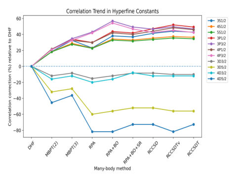
<figcaption class="paper-figure-caption"><b>Fig 1.</b> FIG. 1. Correlation trends from lower- to higher-order many- bdy methods in the calculated Ahf values (in MHz) of the considered states in 23Na. The plotted quantities represent the percentage corrections with respect to the DHF values as progressively through the higher-order many-body methods.</figcaption>
</figure>
<figure class="paper-figure-card">

<figcaption class="paper-figure-caption"><b>Fig 2.</b> FIG. 2. Pictorial depiction of correlation contributions from the OT1 + c.c., OS1v + c.c., OS2v + c.c., T † 2 OS2v + c.c. and T † 2 OS3v + c.c. terms to the Ahf values of the 3S, 3P1/2 and 3P3/2 states at the lowest-order (from the RMBPT method) and all-order methods with the RCCSD, RCCSDTv and RCCSDT approximations in 23Na (in MHz). It demonstrates influence of triples effects both directly and indirectly to the states.</figcaption>
</figure>
</div>
<p><strong>Summary.</strong> The authors perform highly accurate relativistic many-body calculations on $^{23}	ext{Na}$ to predict its hyperfine structure constants. They systematically incorporate electron correlation effects up to triple excitations and include QED/Breit corrections. The findings emphasize that achieving experimental accuracy requires the combined inclusion of these higher-order correlation terms alongside fundamental physical interactions.</p>
<p><strong>Why it may be interesting.</strong> This work exemplifies the state-of-the-art in high-precision atomic structure theory, demonstrating how subtle correlation effects (like triples) are essential for matching spectroscopic measurements in alkali atoms.</p>
<details>
<summary>Detailed structure</summary>
<p><strong>Main problem.</strong> The primary goal is to accurately determine hyperfine structure constants (HFCs) and ionization potentials for $^{23}	ext{Na}$ by rigorously investigating the role of electron correlation effects, particularly those involving triple excitations.</p>
<p><strong>Main result.</strong> Accurate theoretical predictions require the inclusion of higher-order correlation terms (like triples), alongside relativistic corrections (Breit, QED, BW) to reconcile discrepancies between theory and experiment for $    ext{A}_{    ext{hf}}$.</p>
<p><strong>Method.</strong> The study employs advanced relativistic coupled-cluster theory ($   ext{RCCSDT}$) combined with perturbation theory treatments for various physical interactions.</p>
<p><strong>Model / system.</strong> The system is the sodium ($^{23}	ext{Na}$) atom. Calculations utilize a Dirac-Coulomb Hamiltonian and treat electron correlation effects systematically through methods like $ ext{RMBPT}$ and coupled-cluster expansions up to triple excitations.</p>
<p><strong>Key observables.</strong> Magnetic dipole hyperfine structure constants ($   ext{A}<em ext_hf="ext{hf">{    ext{hf}}$), electric quadrupole hyperfine structure constants ($    ext{B}</em>$), and Ionization Potentials (IPs).}</p>
<p><strong>Important parameters / regimes.</strong> The relative importance of correlation effects versus Breit, QED, and Bohr-Weisskopf corrections is a key focus.</p>
<p><strong>Assumptions / limitations.</strong> The calculations rely on approximations inherent to many-body perturbation theory ($ ext{RMBPT}$) or coupled-cluster expansions ($  ext{RCC}$), which systematically treat electron interactions.</p>
<p><strong>Figures summary.</strong> Figures illustrate the systematic inclusion of different physical processes (e.g., correlation effects) and show how triple excitations modify $   ext{A}_{    ext{hf}}$ constants, while tables present numerical comparisons across various theoretical approximations.</p>
<p><strong>Paper structure.</strong> The paper systematically compares results from lower-order methods ($  ext{RMBPT}(2)$, RPA) against higher-order treatments incorporating explicit triple excitations ($   ext{RCCSDT}$), while also adding external corrections like Breit and QED to achieve convergence toward experimental values.</p>
</details>
<details>
<summary>Abstract</summary>
<p>Accurate determination of hyperfine structure constants in atomic systems provides important insight into the interplay of electron correlation and relativistic effects in the nuclear region. Although sodium (Na) is a relatively light atom, previous all-order relativistic many-body calculations of the magnetic dipole hyperfine constants for the low-lying states of $^{23}$Na show noticeable discrepancies with experiment. To address this, we calculate the ionization potentials and hyperfine structure constants of $^{23}$Na using relativistic coupled-cluster theory with explicit inclusion of triple excitations. We further incorporate corrections from the Breit interaction, quantum electrodynamics, and the Bohr-Weisskopf (BW) effect. Results from lower-order methods are also presented to assess the importance of different physical contributions across states. Our calculations demonstrate that contributions from the lower-order relativistic and BW effects play almost similar roles with the electron correlation effects, including triple excitations, and are essential for reconciling theoretical predictions with experimental observations. This study can also serve as a useful guide for understanding the role of triples in heavier alkali systems.</p>
</details>
<p><sub><a href="#top">↑ back to top</a></sub></p>

<p><a id="paper-2607.05169"></a></p>
<h3 id="ising-machine-assisted-large-neighborhood-search-with-flexibly-tunable-subproblem-size"><a href="http://arxiv.org/abs/2607.05169v1">Ising-Machine-Assisted Large Neighborhood Search with Flexibly Tunable Subproblem Size</a></h3>
<p><strong>Authors:</strong> Koshiro Fujimoto, Masashi Yamashita, Shu Tanaka<br>
<strong>Type:</strong> theory · <strong>Category:</strong> statistical mechanics · <strong>PDF:</strong> <a href="https://arxiv.org/pdf/2607.05169v1">https://arxiv.org/pdf/2607.05169v1</a><br>
<strong>Analysis basis:</strong> full PDF text, analyzed in chunks</p>
<div class="figure-strip-hint">↔ Scroll figures horizontally</div>
<div class="paper-figures-scroll">
<figure class="paper-figure-card">
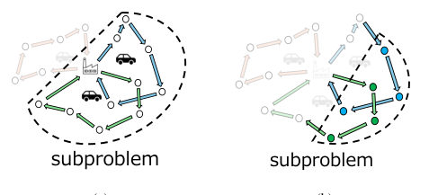
<figcaption class="paper-figure-caption"><b>Fig 1.</b> Fig. 1. Schematics of the vehicles and sites included in the subproblems of LNS-V and LNS-VT. (a) Schematic of LNS-V, where the entire routes of the selected vehicles are re-optimized. (b) Schematic of LNS-VT, where only a contiguous part of the steps in the route of each selected vehicle is re-optimized.</figcaption>
</figure>
<figure class="paper-figure-card">

<figcaption class="paper-figure-caption"><b>Fig 2.</b> Fig. 2. Update process of the objective value in LNS for the VRP with 300 non-depot sites and 5 vehicles. The results of LNS-VT are indicated by “T ′ =”. Panel (b) is an enlarged view of panel (a) along the vertical axis. The points represent the average values over 10 runs, and the error bars represent the standard deviations.</figcaption>
</figure>
<figure class="paper-figure-card">
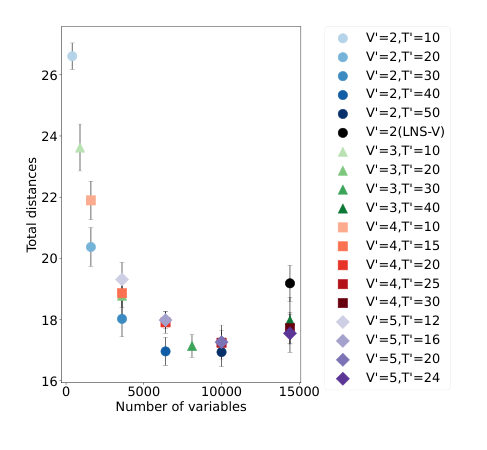
<figcaption class="paper-figure-caption"><b>Fig 3.</b> Fig. 3. Relation between the number of non-depot site-assignment vari- ables included in the subproblem and the objective value after 100 iterations of LNS for the VRP with 300 non-depot sites and 5 vehicles. The points represent the average values over 10 runs, and the error bars represent the standard deviations.</figcaption>
</figure>
<figure class="paper-figure-card">

<figcaption class="paper-figure-caption"><b>Fig 4.</b> Figure 3 shows the relation between the number of vari- ables included in the subproblem and the objective value af- ter 100 iterations. Here, the number of variables denotes the number of non-depot site-assignment variables introduced in Sec. 3. For LNS-VT, this number is (V′T ′)2 in the present experiment because Tseg = T ′ and no depot variables are in- cluded as free variables. For LNS-V, the value is computed from Eq. (16), which applies here because each vehicle visits exactly T −2 non-depot sites in the present setting. Under the problem instance and Ising-machine settings used in this study, the lowest final average objective values were obtained when the number of variables in the...</figcaption>
</figure>
<figure class="paper-figure-card">

<figcaption class="paper-figure-caption"><b>Fig 5.</b> Fig. 4. Number of iterations required for the average objective value to pass through each objective-value interval for LNS-V and LNS-VT with V′ = 2. The horizontal axis represents objective-value intervals, and the ver- tical axis represents the number of iterations required to pass through each interval. A smaller value indicates that the average objective value decreased more quickly in that interval.</figcaption>
</figure>
</div>
<p><strong>Summary.</strong> This paper introduces LNS-VT, an advanced technique for solving large combinatorial optimization problems using Ising machines by adaptively controlling the size of subproblems solved at each step. By demonstrating that flexible subproblem sizing is critical—outperforming methods that only guarantee feasibility—it provides a powerful heuristic framework applicable to various complex scheduling and resource allocation tasks.</p>
<p><strong>Why it may be interesting.</strong> While focused on classical optimization, the use of Ising machines connects directly to quantum annealing hardware. The need to manage problem size and complexity in QUBO formulations mirrors challenges in mapping complex physical Hamiltonians onto limited qubit architectures.</p>
<details>
<summary>Detailed structure</summary>
<p><strong>Main problem.</strong> Improving solution quality for large-scale combinatorial optimization problems like VRP and QMKP using Ising machine solvers within a Large Neighborhood Search (LNS) framework.</p>
<p><strong>Main result.</strong> A novel LNS variant, LNS-VT, that flexibly controls the subproblem size significantly outperforms existing methods by achieving up to 10% objective value reduction in VRP compared to fixed-size approaches.</p>
<p><strong>Method.</strong> The authors propose LNS-VT, which iteratively updates solutions by solving smaller, carefully sized subproblems derived from the original problem structure, ensuring feasibility is maintained while allowing fine control over variables.</p>
<p><strong>Model / system.</strong> The core model involves mapping combinatorial optimization problems (VRP, QMKP) into QUBO Hamiltonians solved by Ising machines. The system relies on defining and iteratively solving smaller subproblems rather than the entire large-scale problem at once.</p>
<p><strong>Key observables.</strong> Objective function value reduction ($\approx 10\%$ improvement), total profit maximization for QMKP, and the number of binary variables in the subproblem.</p>
<p><strong>Important parameters / regimes.</strong> The tunable parameter is the length of consecutive route segments re-optimized per vehicle (for VRP) or the prescribed number of items ($N'$) and selected knapsacks ($K'$).</p>
<p><strong>Assumptions / limitations.</strong> Feasibility preservation alone is insufficient; controlling the subproblem size independently of problem structure is crucial for optimal performance.</p>
<p><strong>Figures summary.</strong> Figure 8 shows that for QMKP, the total profit increases significantly when the number of binary variables in the subproblem is tuned to an optimal range (100-150), demonstrating the benefit of variable control.</p>
<p><strong>Paper structure.</strong> The paper details the VRP formulation and LNS framework, contrasts existing methods with the proposed LNS-VT for VRP, applies this principle to QMKP, and concludes by emphasizing that structure-aware subproblem sizing is key.</p>
</details>
<details>
<summary>Abstract</summary>
<p>Ising machines are heuristic solvers for combinatorial optimization, but their solution quality can degrade when large-scale constrained problems are solved directly. Ising-machine-assisted large neighborhood search (LNS) instead repeatedly updates a feasible current solution by solving smaller subproblems. An existing feasibility-preserving method for the vehicle routing problem (VRP) re-optimizes the entire routes of selected vehicles and thus cannot adjust the subproblem size finely. We propose LNS-VT, which introduces the number of consecutive steps re-optimized per vehicle as a parameter to control the subproblem size finely while preserving feasibility. For a 300-site, 5-vehicle VRP, its best setting reduced the objective value by approximately 10\% relative to the existing method after 100 iterations, and the appropriate setting changed with the current solution quality. Applying the same principle to the quadratic multiple knapsack problem, we confirmed that an appropriate subproblem size also exists, indicating that subproblem-size control is important in Ising-machine-assisted LNS.</p>
</details>
<p><sub><a href="#top">↑ back to top</a></sub></p>

<p><a id="paper-2607.05386"></a></p>
<h3 id="logical-spectroscopy-lifted-product-codes-with-addressable-bases"><a href="http://arxiv.org/abs/2607.05386v1">Logical Spectroscopy: Lifted-Product Codes with Addressable Bases</a></h3>
<p><strong>Authors:</strong> Jong Yeon Lee<br>
<strong>Type:</strong> theory · <strong>Category:</strong> quantum information and computing · <strong>PDF:</strong> <a href="https://arxiv.org/pdf/2607.05386v1">https://arxiv.org/pdf/2607.05386v1</a><br>
<strong>Analysis basis:</strong> full PDF text, analyzed in chunks</p>
<div class="figure-strip-hint">↔ Scroll figures horizontally</div>
<div class="paper-figures-scroll">
<figure class="paper-figure-card">

<figcaption class="paper-figure-caption"><b>Fig 1.</b> FIG. 1. Chinese-Remainder-Theorem (CRT) decomposition as a spectral microscope. The displayed quasi-cyclic seed, the toy upper-bound witness seed T15 2,4 from Appendix B, is first a single R-linear module problem over R = F2[x]/(x15+1), where field-style row reduction is not available. Factoring x15 + 1 decomposes R by the Chinese remainder theorem into finite-field packets Kg = F2[x]/(g). In each packet, the seed reduces to an ordinary finite-field matrix, so packet ranks, kernel and quotient coordinates, and K¨unneth representatives can be computed independently. Same-packet tensor data give the Z-logical packet contributions, while conjugate X/Z labels are paired through reciprocal...</figcaption>
</figure>
<figure class="paper-figure-card">
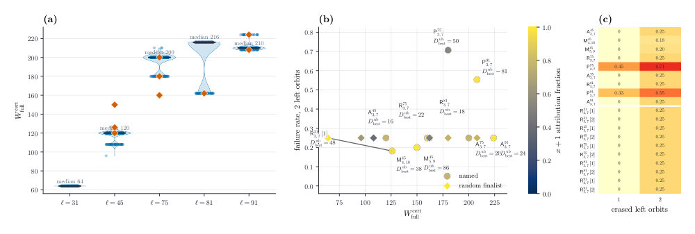
<figcaption class="paper-figure-caption"><b>Fig 2.</b> FIG. 2. Certificate-search and erasure-spectroscopy landscape. (a) Distribution of the full conjugate-basis certificate W cert full over reproducible random monomial scans for ℓ= 31, 45, 75, 81, 91. The translucent blue shapes are violin plots: their horizontal width at a given height is proportional to the empirical density of scan samples with that certificate value. Blue circles are individual scan samples; orange diamonds mark named benchmark seeds where shown; horizontal annotations give the median. (b) Certificate-erasure tradeoff for named seeds and selected random candidates passing the seed filter. Circles are named seeds, diamonds are filtered random candidates, the horizontal...</figcaption>
</figure>
<figure class="paper-figure-card">
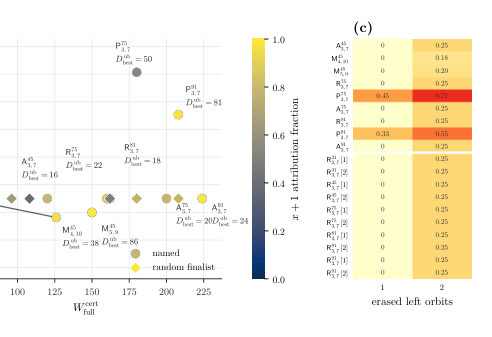
<figcaption class="paper-figure-caption"><b>Fig 3.</b> Figure 2 and the tabulated data in Appendix F illus- trate why basis width, distance upper-bound diagnos- tics, and structured-erasure exposure are distinct objec- tives. In the displayed comparison, M45 4,10 has a mod- est certificate and a lower two-left-orbit failure rate than the 3 × 7 monomial benchmarks. The sparse parity- systematic probes P75 3,7 and P91 3,7 repair parts of the trivial- packet rank profile, but they are more exposed to this particular one- and two-left-orbit erasure model. Con- versely, an attractive erasure score does not compensate for a verified small distance upper-bound witness; such seeds should be treated as warning examples rather than benchmark candidates.</figcaption>
</figure>
<figure class="paper-figure-card">
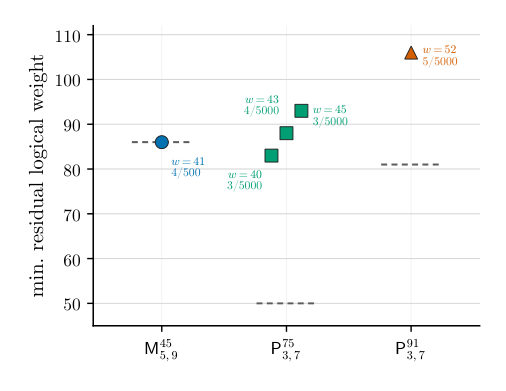
<figcaption class="paper-figure-caption"><b>Fig 4.</b> FIG. 3. Exact-weight BP-OSD residual-logical wit- nesses. Z-side exact-weight code-capacity probes decoded with minimum-sum BP, 1000 BP iterations, and OSDCS of order one. Each marker is a selected shell with at least one log- ical failure; its height is the minimum residual logical weight among failing shots, and its label reports w and failures/shots. Dashed ticks mark the displayed upper bound Dub best from Ta- ble II. The lightest M45 5,9 and P75 3,7 supports were replayed and verified as nontrivial logicals; zero-failure and partial sampled shells are reported in the text. This is a decoder-stress diag- nostic, not a distance lower-bound certificate.</figcaption>
</figure>
<figure class="paper-figure-card">

<figcaption class="paper-figure-caption"><b>Fig 5.</b> FIG. 4. Seed-level distance upper-bound witness diagnostic. (a) Frequency of low-cost monomial-equivalence witnesses in the reproducible random scans for ℓ= 31, 45, 75, 81, 91. Each stacked bar counts valid scan samples at that lift length: the green portion passes the seed filter, while the orange cap is the subset with a verified Dub seed ≤2 witness. The annotations above the bars give the witness count out of the valid scan samples and the corresponding percentage. (b) Certificate-erasure coordinates for the displayed benchmark candidates together with upper-bound witness seeds used as diagnostics. Orange rings mark seeds with Dub seed ≤2; filled points pass the seed filter. The vertical...</figcaption>
</figure>
</div>
<p><strong>Summary.</strong> This paper introduces 'logical spectroscopy' to solve the problem of constructing usable logical bases for Abelian lifted-product qLDPC codes. By employing the Chinese Remainder Theorem to decompose the underlying group algebra, it replaces failed global row reduction with solvable finite-field computations. This yields a fully addressable and structured basis essential for implementing quantum gates in fault-tolerant quantum computation.</p>
<p><strong>Why it may be interesting.</strong> This work provides a powerful algebraic tool to analyze complex quantum error-correcting codes by translating difficult group algebra problems into manageable finite-field computations, which is crucial for designing scalable fault-tolerant quantum hardware.</p>
<details>
<summary>Detailed structure</summary>
<p><strong>Main problem.</strong> The core challenge is developing a systematic method to construct and addressable conjugate logical operators for high-rate Abelian lifted-product quantum low-density parity-check (qLDPC) codes.</p>
<p><strong>Main result.</strong> The authors introduce 'logical spectroscopy,' a spectral construction that successfully replaces failed global row reduction with finite-field computations, yielding complete addressable conjugate logical bases.</p>
<p><strong>Method.</strong> The method utilizes the Chinese Remainder Theorem (CRT) to decompose the group algebra into Frobenius character packets. Calculations are performed independently in each packet, and results are then lifted back using CRT idempotents.</p>
<p><strong>Model / system.</strong> The work focuses on Quantum Error-Correcting (QEC) codes, specifically Abelian lifted-product (LP) qLDPC codes, which encode logical qubits for fault-tolerant quantum computation.</p>
<p><strong>Key observables.</strong> Complete addressable conjugate logical bases; packet ranks showing sector splitting; certified upper bounds on basis width from lifted representatives; and packet-attributed dimensions for erased logicals.</p>
<p><strong>Important parameters / regimes.</strong> The construction is valid under bounded seed-shape and bounded group-basis-support assumptions.</p>
<p><strong>Assumptions / limitations.</strong> The primary assumption enabling the spectral method is that the complex problem over the group algebra can be decomposed into independent, solvable finite-field problems via CRT.</p>
<p><strong>Figures summary.</strong> Figures illustrate the process flow: moving from a module problem over the group algebra to factorization into CRT packets, solving each packet independently, and finally lifting the results back to establish logical sector pairing.</p>
<p><strong>Paper structure.</strong> The paper first identifies the failure of standard row reduction for Abelian LP codes. It then introduces 'logical spectroscopy' as the spectral replacement, detailing the use of CRT decomposition, computation within individual packets (kernels, quotients), and the final reconstruction/pairing of X and Z logicals.</p>
</details>
<details>
<summary>Abstract</summary>
<p>Quantum LDPC memories can encode many logical qubits, but dimension alone does not make them usable: applications need explicit conjugate logical operators with structured labels and physical representatives. For hypergraph-product (HGP) codes this structure is transparent, since the input matrices are binary and can be row-reduced over $\mathbb{F}_2$. Abelian lifted-product codes are subtler. Their seed entries are shifts, or sparse sums of shifts, in a group-algebra ring rather than a field, so pivot blocks need not be invertible and global row reduction can fail.   We address this with \emph{logical spectroscopy}, a spectral construction that replaces global row reduction by finite-field computations in the Frobenius character packets of the Abelian lift group. The Chinese remainder theorem (CRT) decomposes the group algebra into these packets. In each packet, we compute kernels, quotients, and product-complex homology; we then lift the resulting representatives back with CRT idempotents and pair $X$ and $Z$ logicals through reciprocal trace-dual packets. This gives complete addressable conjugate logical bases for finite Abelian lifted products $\mathsf{LP}(A,B)$.   The same packet data also gives design diagnostics. Packet ranks show how logical sectors split, the lifted representatives give certified upper bounds on the width of the constructed conjugate basis, and whole-orbit erasures decompose into packet-attributed erased-logical dimensions. Thus, CRT packets also serve as working coordinates: they label logical sectors, certify the constructed basis width, and attribute structured erasure failures. Under bounded seed-shape and group-basis-support assumptions, this construction gives Abelian lifted-product qLDPC families an HGP-like feature while preserving the layout freedom of group-algebra lifts.</p>
</details>
<p><sub><a href="#top">↑ back to top</a></sub></p>

<p><a id="paper-2607.03786"></a></p>
<h3 id="perturbed-quantum-billiards-on-the-hyperbolic-plane"><a href="http://arxiv.org/abs/2607.03786v1">Perturbed quantum billiards on the hyperbolic plane</a></h3>
<p><strong>Authors:</strong> Matic Orel<br>
<strong>Type:</strong> theory · <strong>Category:</strong> other · <strong>PDF:</strong> <a href="https://arxiv.org/pdf/2607.03786v1">https://arxiv.org/pdf/2607.03786v1</a><br>
<strong>Analysis basis:</strong> full PDF text, analyzed in chunks</p>
<div class="figure-strip-hint">↔ Scroll figures horizontally</div>
<div class="paper-figures-scroll">
<figure class="paper-figure-card">
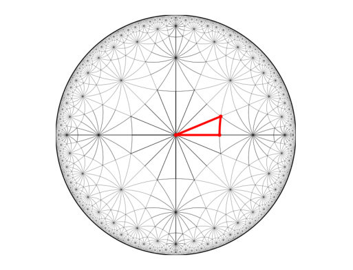
<figcaption class="paper-figure-caption"><b>Fig 1.</b> FIG. 1 Finite-depth reflection tessellation of the Schmit triangle in the Poincar´e disk (1). The red triangle de- notes the fundamental billiard domain, whose angles are π/8, π/2, and π/3. Since each angle is an integer submul- tiple of π, repeated reflections in the three geodesic sides generate a hyperbolic triangle group and tile the hyper- bolic plane without gaps or overlaps. The black curves show a finite subset of this infinite tessellation; the accu- mulation of smaller copies near the unit circle reflects the compression of hyperbolic distance in the Poincar´e disk model.</figcaption>
</figure>
<figure class="paper-figure-card">

<figcaption class="paper-figure-caption"><b>Fig 2.</b> FIG. 2 Example classical trajectory in Schmit’s hyper- bolic triangle. The black curve shows the billiard bound- ary in the Poincar´e disk model, and the red arcs show several specular reflections of a geodesic trajectory. The two sides emanating from the origin are radial geodesics, while the third side is a circular arc orthogonal to the unit disk boundary.</figcaption>
</figure>
<figure class="paper-figure-card">
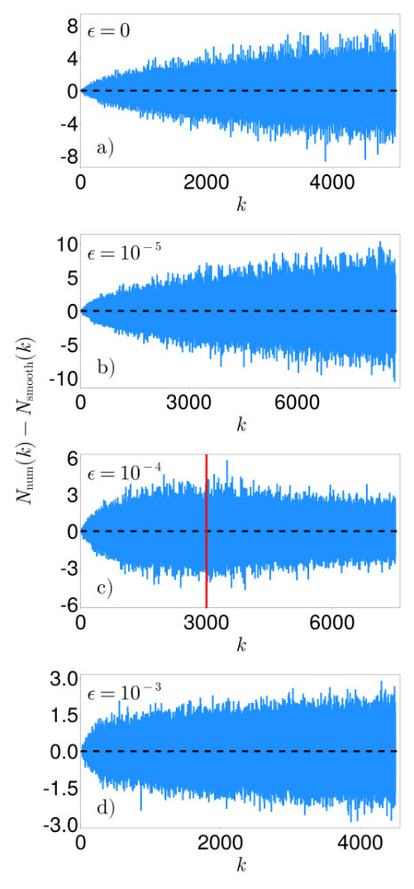
<figcaption class="paper-figure-caption"><b>Fig 3.</b> FIG. 3 Deviation of the numerical counting function from the Weyl law (14). The fluctuations remain cen- tered around zero and show no systematic drift, indi- cating that the computed spectra are complete on the plotted intervals. For ϵ = 10−4, the fluctuations decrease after approximately k ≃3000 (red vertical line in panel c)), consistent with the simultaneous approach of the lo- cal spacing statistics and the sliding–window average gap ratio towards GOE as seen in Fig.8.</figcaption>
</figure>
<figure class="paper-figure-card">

<figcaption class="paper-figure-caption"><b>Fig 4.</b> FIG. 4 Nearest-neighbour spacing distributions for the weak perturbations ϵ = 10−5 and ϵ = 10−4, shown in four spectral windows for each perturbation. Panels (a)– (d) correspond to ϵ = 10−5 with k ∈[500.1, 3834.1], k ∈[4550.1, 5926.6], k ∈[6412.8, 7452.5], and k ∈ [7844.6, 8715.0], respectively. Each of these panels con- tains 1.5 × 105 consecutive eigenvalues, corresponding to 149999 unfolded spacings. Panels (e)–(h) correspond to ϵ = 10−4 with k ∈[500.1, 3294.3], k ∈[3929.1, 5100.6], k ∈[5531.6, 6416.6], and k ∈[6764.2, 7505.0], respec- tively. Each of these panels contains 1.1 × 105 consecu- tive eigenvalues, corresponding to 109999 unfolded spac- ings. The blue histograms show the...</figcaption>
</figure>
<figure class="paper-figure-card">

<figcaption class="paper-figure-caption"><b>Fig 5.</b> FIG. 5 Same nearest-neighbour spacing distributions as in Fig. 4, shown on a logarithmic vertical scale to empha- size the large-spacing tail. Panels (a)–(d) correspond to ϵ = 10−5 with k ∈[500.1, 3834.1], k ∈[4550.1, 5926.6], k ∈ [6412.8, 7452.5], and k ∈ [7844.6, 8715.0], re- spectively, each using 1.5 × 105 consecutive eigenvalues (149999 unfolded spacings). Panels (e)–(h) correspond to ϵ = 10−4 with k ∈[500.1, 3294.3], k ∈[3929.1, 5100.6], k ∈ [5531.6, 6416.6], and k ∈ [6764.2, 7505.0], re- spectively, each using 1.1 × 105 consecutive eigenvalues (109999 unfolded spacings). For ϵ = 10−5, the tail re- mains close to exponential over much of the accessible range. For ϵ = 10−4, the tail...</figcaption>
</figure>
</div>
<p><strong>Summary.</strong> This paper analyzes the onset of quantum chaos in hyperbolic billiards by introducing small geometric perturbations to an arithmetic system. The authors demonstrate a measurable crossover in spectral statistics from Poissonian (arithmetic) behavior towards GOE statistics as the perturbation strength changes. This transition is confirmed through both eigenvalue spacing analysis and eigenfunction localization measurements, providing a comprehensive view of chaotic emergence.</p>
<p><strong>Why it may be interesting.</strong> It provides a detailed, combined spectral and wave-function picture of quantum chaos transition in non-Euclidean geometry, which is relevant for understanding chaotic dynamics in curved spaces or complex potentials.</p>
<details>
<summary>Detailed structure</summary>
<p><strong>Main problem.</strong> The study investigates how generic quantum chaos emerges from an arithmetic billiard system defined on the hyperbolic plane when subjected to small area-preserving geometric perturbations.</p>
<p><strong>Main result.</strong> The spectral statistics exhibit a clear, perturbation-dependent crossover from Poisson-like arithmetic behavior towards Gaussian Orthogonal Ensemble (GOE) statistics, which is corroborated by eigenfunction localization measurements.</p>
<p><strong>Method.</strong> The analysis combines spectral analysis of eigenvalues with the study of eigenfunctions using Poincaré–Husimi representations to quantify phase-space localization.</p>
<p><strong>Model / system.</strong> The system is a quantum billiard defined on a hyperbolic domain (a perturbed Schmit triangle) governed by the Laplace–Beltrami operator. The Hamiltonian is analyzed through its spectral properties and eigenfunction structure.</p>
<p><strong>Key observables.</strong> Nearest-neighbour spacing distribution, localization width ($\sigma_{	ext{Beta}}$), spectral statistics crossover scale, and Lyapunov exponent.</p>
<p><strong>Important parameters / regimes.</strong> Perturbation strength ($\epsilon$), wavenumber ($k$), and the hyperbolic geometry parameters defining the billiard domain.</p>
<p><strong>Assumptions / limitations.</strong> The generalized-gamma fit is used only as a diagnostic tool, not as a universal law; convergence analysis relies on specialized numerical techniques for solving boundary integral equations.</p>
<p><strong>Figures summary.</strong> Figures illustrate the geometric setup (tessellation of the hyperbolic triangle) and show spectral/localization data confirming the crossover behavior across different perturbation strengths.</p>
<p><strong>Paper structure.</strong> The paper proceeds by defining the perturbed hyperbolic billiard, calculating eigenvalues via boundary integral methods, analyzing the resulting spectral statistics (Poisson to GOE), and complementing this with eigenfunction localization analysis.</p>
</details>
<details>
<summary>Abstract</summary>
<p>We study the emergence of generic quantum chaos from an arithmetic billiard in the hyperbolic plane. Starting from an arithmetic triangle, we introduce small area-preserving geometric perturbations and compute long consecutive sequences of eigenvalues and eigenstates. The spectral statistics show a perturbation-dependent crossover from Poisson-like arithmetic behaviour to the Gaussian orthogonal ensemble (GOE), with the crossover scale moving to higher wavenumbers as the perturbation decreases. To characterize the nearest-neighbour spacing distribution, we compare the data with Brody and generalized-gamma fits. The generalized-gamma form is used only as a two-parameter diagnostic, allowing the small- and intermediate-spacing structure to vary independently from the large-spacing tail, rather than as a universal crossover law. For the weakest perturbation, we also compare the data with an effective block-GOE model, which diagnoses residual block-like structure deep into the computed spectral range. We complement the spectral analysis with Poincaré-Husimi representations of the eigenstates and quantify phase-space localization using an entropy-based measure. Its distribution is well described by Beta distributions whose width decays as a power law in the wavenumber. Before the spectral crossover, the localization statistics retain memory of the near-arithmetic regime. After the GOE regime is reached, the localization-fluctuation widths collapse onto a common decay law, sigma(Beta) ~ k^{-eta}, with eta approximately 0.37--0.38. These results provide a combined spectral and eigenfunction-level picture of the arithmetic-to-GOE crossover in hyperbolic quantum billiards.</p>
</details>
<p><sub><a href="#top">↑ back to top</a></sub></p>

<p><a id="paper-2607.04586"></a></p>
<h3 id="qutuner-feature-and-learning-guided-optimization-pass-tuning-for-quantum-compilers"><a href="http://arxiv.org/abs/2607.04586v1">QuTuner: Feature- and Learning-Guided Optimization Pass Tuning for Quantum Compilers</a></h3>
<p><strong>Authors:</strong> Ming Zhong, Xiangyu Ren, Jinglei Cheng, Shaohua Li, Zhiding Liang<br>
<strong>Type:</strong> theory · <strong>Category:</strong> quantum information and computing · <strong>PDF:</strong> <a href="https://arxiv.org/pdf/2607.04586v1">https://arxiv.org/pdf/2607.04586v1</a><br>
<strong>Analysis basis:</strong> full PDF text, analyzed in chunks</p>
<div class="figure-strip-hint">↔ Scroll figures horizontally</div>
<div class="paper-figures-scroll">
<figure class="paper-figure-card">
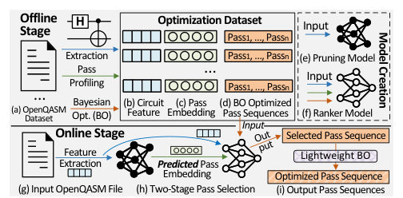
<figcaption class="paper-figure-caption"><b>Fig 1.</b> Figure 2. The overall workflow of QuTuner. In the figure, →denotes the flow of circuit features, →denotes pass em- beddings, and →denotes optimized pass sequences.</figcaption>
</figure>
<figure class="paper-figure-card">

<figcaption class="paper-figure-caption"><b>Fig 2.</b> Figure 4. Static feature-based and pass embedding-based measurements of BO optimized pass sequence similarity (measured by edit similarity, higher is better).</figcaption>
</figure>
<figure class="paper-figure-card">

<figcaption class="paper-figure-caption"><b>Fig 3.</b> Figure 5. Two-stage selection model design of QuTuner, including the pruning model (a) and the ranker model (b).</figcaption>
</figure>
<figure class="paper-figure-card">
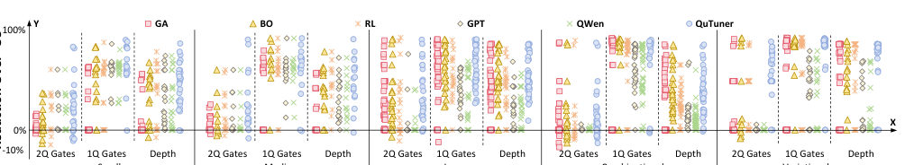
<figcaption class="paper-figure-caption"><b>Fig 4.</b> Figure 7. Per-case optimization distribution of QuTuner and baselines. A slight x-axis jitter improves visibility of overlapping points. Many RL, GPT, and QWen cases concentrate at 0% reduction because of failed compilations, as described in Sec. 5.1.</figcaption>
</figure>
<figure class="paper-figure-card">
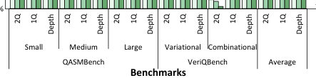
<figcaption class="paper-figure-caption"><b>Fig 5.</b> Figure 8. Scalability analysis across different quantum back- ends.</figcaption>
</figure>
</div>
<p><strong>Summary.</strong> QuTuner is a novel framework designed to automatically tune the sequence and selection of optimization passes within quantum compilers. It overcomes limitations of prior work by incorporating 'optimization-aware pass embeddings' alongside static circuit features. By training machine learning models on a large dataset, QuTuner efficiently retrieves and ranks optimal pass sequences, leading to substantial improvements in compiled circuit quality while drastically cutting down tuning time.</p>
<p><strong>Why it may be interesting.</strong> This work is highly relevant as it tackles the practical engineering challenge of optimizing quantum algorithms for near-term hardware by automating complex compiler decisions, which is a critical bottleneck in realizing fault-tolerant quantum computation.</p>
<details>
<summary>Detailed structure</summary>
<p><strong>Main problem.</strong> The core problem is developing effective, generalizable methods for 'pass tuning' within quantum compilers to minimize resource costs (like gate count or depth) while improving execution fidelity.</p>
<p><strong>Main result.</strong> QuTuner significantly improves metric reduction on both Qiskit and PyTKET benchmarks—up to 84.85% improvement on Qiskit—while drastically reducing the required tuning time.</p>
<p><strong>Method.</strong> The authors propose QuTuner, a feature-guided framework that builds an optimization dataset by characterizing circuits using static features and novel 'optimization-aware pass embeddings' derived from profiling circuit responses to individual passes.</p>
<p><strong>Model / system.</strong> The system is quantum computation realized through quantum circuits (sequences of 1Q and 2Q gates) compiled for platforms like Qiskit. The optimization process involves multiple compiler passes that transform the initial circuit representation.</p>
<p><strong>Key observables.</strong> Circuit-level metrics targeted for reduction include two-qubit gate count ($\Delta 2Q$), one-qubit gate count ($\Delta 1Q$), and overall circuit depth ($\Delta 	ext{Depth}$).</p>
<p><strong>Important parameters / regimes.</strong> The tuning objective is a weighted combination of metric reductions: $  ext{Objective} = \alpha \cdot \Delta 2Q + eta \cdot \Delta 1Q + \gamma \cdot \Delta    ext{Depth}$.</p>
<p><strong>Assumptions / limitations.</strong> Prior methods are limited because they only search small pass subspaces or rely solely on static features that fail to capture how a circuit reacts dynamically to optimization passes.</p>
<p><strong>Figures summary.</strong> Figure 1 illustrates an example quantum circuit and the stages of compilation. Figure 2 details the two-stage QuTuner workflow (offline training $
ightarrow$ online retrieval/ranking). Figure 3 shows various feature types used for circuit characterization.</p>
<p><strong>Paper structure.</strong> The paper first identifies limitations in prior tuning methods, then introduces QuTuner by detailing its dataset construction and dual feature representation (static + embedding). It describes the two-stage learning process (pruning/ranking models) before presenting quantitative results on major quantum toolkits.</p>
</details>
<details>
<summary>Abstract</summary>
<p>Quantum compilers play a key role in transforming quantum circuits into lower-cost implementations with improved execution fidelity. This process is commonly guided by circuit-level metrics, such as gate counts and circuit depth. Although compiler pass tuning has been widely studied in classical compilation, directly transferring these techniques to quantum compilers is challenging, because quantum programs are expressed as circuits and exhibit optimization behaviors that are shaped by quantum-specific structures. Prior quantum compiler tuning approaches have begun to use circuit features to guide pass selection, but they remain limited in two aspects: they search only a small portion of the optimization-pass space, and they mainly rely on static features that do not explicitly reflect how a circuit reacts to compiler optimizations.   We present QuTuner, a feature-guided quantum compiler pass tuning framework that generalizes across compilers and tuning objectives. QuTuner first builds a large optimization dataset. It then characterizes each circuit from two complementary views: static circuit features that describe circuit structure, and optimization-aware pass embeddings that summarize the circuit's responses to individual optimization passes. Using these representations, QuTuner trains two offline models to retrieve and rank candidate pass sequences for unseen circuits, followed by lightweight refinement. We evaluate QuTuner on Qiskit and PyTKET using two benchmark suites. On Qiskit, QuTuner improves the evaluation-metric reduction by up to 84.85% over the strongest baseline while reducing tuning time by 73.59%. On PyTKET, it improves metric reduction by up to 18.68% with a 64.49% reduction in tuning time. These results show that QuTuner provides an effective approach to adaptive pass tuning for quantum compilers.</p>
</details>
<p><sub><a href="#top">↑ back to top</a></sub></p>
<hr>
<p>
<a href="index.html">← Index</a>
 · <a href="papers_06.html">← Previous</a> · <a href="papers_08.html">Next →</a>
</p>
<hr>

</body>
</html>
